| ComCat M7.1 (ci38457511), 11 Days After, ShakeMap Surfaces | |
|---|---|
| Num Simulations | 100000 |
| Start Time | 2019/07/17 03:19:54 UTC |
| Start Time Epoch Milliseconds | 1563333594040 |
| Duration | 10 Years |
| Includes Spontaneous? | false |
| Trigger Ruptures | 1507 Trigger Ruptures |
| First: M3.98 at 2019/07/04 17:02:55 UTC | |
| Last: M2.65 at 2019/07/17 03:08:29 UTC | |
| Largest: M7.1 at 2019/07/06 03:19:53 UTC | |
| Trigger Ruptures | (none) |
| Magnitude | 1 Hour Prob | 1 Day Prob | 1 Week Prob | 1 Month Prob | 1 Year Prob | 10 Year Prob |
|---|---|---|---|---|---|---|
| M≥4 | 0.041 (4.11%) | 0.544 (54.42%) | 0.984 (98.39%) | 1.000 (100.00%) | 1.000 (100.00%) | 1.000 (100.00%) |
| M≥4.5 | 0.014 (1.35%) | 0.225 (22.48%) | 0.743 (74.30%) | 0.972 (97.16%) | 1.000 (99.99%) | 1.000 (100.00%) |
| M≥5 | 4.17E-3 (0.42%) | 0.078 (7.79%) | 0.354 (35.38%) | 0.683 (68.31%) | 0.953 (95.26%) | 0.992 (99.18%) |
| M≥5.5 | 1.18E-3 (0.12%) | 0.025 (2.48%) | 0.128 (12.80%) | 0.304 (30.36%) | 0.623 (62.26%) | 0.795 (79.46%) |
| M≥6 | 2.90E-4 (0.03%) | 6.87E-3 (0.69%) | 0.037 (3.74%) | 0.097 (9.73%) | 0.245 (24.49%) | 0.372 (37.19%) |
| M≥6.5 | 1.00E-4 (0.01%) | 1.35E-3 (0.14%) | 8.08E-3 (0.81%) | 0.023 (2.26%) | 0.061 (6.08%) | 0.100 (10.04%) |
| M≥7 | 4.00E-5 (0.00%) | 5.00E-4 (0.05%) | 2.90E-3 (0.29%) | 7.91E-3 (0.79%) | 0.021 (2.13%) | 0.036 (3.64%) |
| M≥7.1 | 4.00E-5 (0.00%) | 4.30E-4 (0.04%) | 2.43E-3 (0.24%) | 6.72E-3 (0.67%) | 0.018 (1.81%) | 0.031 (3.10%) |
| M≥7.5 | 0.000 (0.00%) | 1.80E-4 (0.02%) | 9.10E-4 (0.09%) | 2.57E-3 (0.26%) | 7.11E-3 (0.71%) | 0.012 (1.20%) |
| M≥8 | 0.000 (0.00%) | 0.000 (0.00%) | 2.00E-5 (0.00%) | 4.00E-5 (0.00%) | 1.50E-4 (0.01%) | 2.70E-4 (0.03%) |
Legend
| Mag | Mean | 2.5 %ile | 97.5 %ile | Median | Mode | 10 yr Probability | 10 yr Supra-Seis Prob | Primary Aftershocks Mean |
|---|---|---|---|---|---|---|---|---|
| M≥2.5 | 2530.837 | 1579.000 | 7263.000 | 2023.000 | 1827.000 | 1.000 (100.00%) | 0.157 (15.70%) | 1108.198 |
| M≥2.6 | 2010.358 | 1249.000 | 5772.000 | 1607.000 | 1472.000 | 1.000 (100.00%) | 0.157 (15.70%) | 880.263 |
| M≥2.7 | 1596.769 | 989.000 | 4587.000 | 1277.000 | 1121.000 | 1.000 (100.00%) | 0.157 (15.70%) | 699.165 |
| M≥2.8 | 1268.307 | 781.000 | 3643.000 | 1015.000 | 920.000 | 1.000 (100.00%) | 0.157 (15.70%) | 555.351 |
| M≥2.9 | 1007.417 | 617.000 | 2900.000 | 806.000 | 737.000 | 1.000 (100.00%) | 0.157 (15.70%) | 441.145 |
| M≥3 | 800.240 | 486.000 | 2307.000 | 641.000 | 590.000 | 1.000 (100.00%) | 0.157 (15.70%) | 350.441 |
| M≥3.1 | 635.661 | 383.000 | 1840.000 | 510.000 | 466.000 | 1.000 (100.00%) | 0.157 (15.70%) | 278.359 |
| M≥3.2 | 504.898 | 301.000 | 1459.000 | 405.000 | 359.000 | 1.000 (100.00%) | 0.157 (15.70%) | 221.092 |
| M≥3.3 | 400.986 | 236.000 | 1158.000 | 322.000 | 290.000 | 1.000 (100.00%) | 0.157 (15.70%) | 175.622 |
| M≥3.4 | 318.458 | 185.000 | 920.000 | 256.000 | 229.000 | 1.000 (100.00%) | 0.157 (15.70%) | 139.477 |
| M≥3.5 | 252.927 | 144.000 | 732.000 | 204.000 | 185.000 | 1.000 (100.00%) | 0.157 (15.70%) | 110.792 |
| M≥3.6 | 200.879 | 113.000 | 581.000 | 162.000 | 149.000 | 1.000 (100.00%) | 0.157 (15.70%) | 88.003 |
| M≥3.7 | 159.501 | 87.000 | 462.000 | 129.000 | 111.000 | 1.000 (100.00%) | 0.157 (15.70%) | 69.874 |
| M≥3.8 | 126.666 | 68.000 | 368.000 | 103.000 | 88.000 | 1.000 (100.00%) | 0.157 (15.70%) | 55.498 |
| M≥3.9 | 100.573 | 52.000 | 293.000 | 82.000 | 73.000 | 1.000 (100.00%) | 0.157 (15.70%) | 44.058 |
| M≥4 | 79.839 | 40.000 | 233.000 | 65.000 | 56.000 | 1.000 (100.00%) | 0.157 (15.70%) | 34.986 |
| M≥4.1 | 63.360 | 30.000 | 185.000 | 51.000 | 45.000 | 1.000 (100.00%) | 0.157 (15.70%) | 27.762 |
| M≥4.2 | 50.293 | 23.000 | 147.000 | 41.000 | 36.000 | 1.000 (100.00%) | 0.157 (15.70%) | 22.041 |
| M≥4.3 | 39.905 | 17.000 | 118.000 | 32.000 | 29.000 | 1.000 (100.00%) | 0.157 (15.70%) | 17.490 |
| M≥4.4 | 31.648 | 13.000 | 94.000 | 26.000 | 23.000 | 1.000 (100.00%) | 0.157 (15.70%) | 13.874 |
| M≥4.5 | 25.087 | 9.000 | 76.000 | 20.000 | 18.000 | 1.000 (100.00%) | 0.157 (15.70%) | 11.002 |
| M≥4.6 | 19.884 | 7.000 | 61.000 | 16.000 | 14.000 | 1.000 (100.00%) | 0.157 (15.70%) | 8.719 |
| M≥4.7 | 15.745 | 5.000 | 49.000 | 13.000 | 10.000 | 1.000 (99.99%) | 0.157 (15.70%) | 6.904 |
| M≥4.8 | 12.451 | 3.000 | 39.000 | 10.000 | 9.000 | 1.000 (99.95%) | 0.157 (15.70%) | 5.461 |
| M≥4.9 | 9.850 | 2.000 | 31.000 | 8.000 | 7.000 | 0.997 (99.74%) | 0.157 (15.70%) | 4.318 |
| M≥5 | 7.777 | 1.000 | 26.000 | 6.000 | 5.000 | 0.992 (99.18%) | 0.157 (15.70%) | 3.407 |
| M≥5.1 | 6.128 | 1.000 | 21.000 | 5.000 | 4.000 | 0.979 (97.89%) | 0.157 (15.70%) | 2.686 |
| M≥5.2 | 4.828 | 0.000 | 17.000 | 4.000 | 3.000 | 0.955 (95.51%) | 0.157 (15.70%) | 2.116 |
| M≥5.3 | 3.786 | 0.000 | 14.000 | 3.000 | 2.000 | 0.918 (91.81%) | 0.157 (15.70%) | 1.661 |
| M≥5.4 | 2.963 | 0.000 | 11.000 | 2.000 | 1.000 | 0.863 (86.31%) | 0.157 (15.70%) | 1.300 |
| M≥5.5 | 2.309 | 0.000 | 9.000 | 2.000 | 1.000 | 0.795 (79.46%) | 0.157 (15.70%) | 1.014 |
| M≥5.6 | 1.788 | 0.000 | 7.000 | 1.000 | 1.000 | 0.715 (71.55%) | 0.157 (15.70%) | 0.785 |
| M≥5.7 | 1.372 | 0.000 | 6.000 | 1.000 | 0.000 | 0.625 (62.52%) | 0.157 (15.70%) | 0.604 |
| M≥5.8 | 1.047 | 0.000 | 5.000 | 1.000 | 0.000 | 0.535 (53.46%) | 0.157 (15.70%) | 0.460 |
| M≥5.9 | 0.788 | 0.000 | 4.000 | 0.000 | 0.000 | 0.448 (44.76%) | 0.157 (15.70%) | 0.348 |
| M≥6 | 0.606 | 0.000 | 3.000 | 0.000 | 0.000 | 0.372 (37.19%) | 0.157 (15.70%) | 0.265 |
| M≥6.1 | 0.440 | 0.000 | 3.000 | 0.000 | 0.000 | 0.293 (29.34%) | 0.133 (13.34%) | 0.195 |
| M≥6.2 | 0.291 | 0.000 | 2.000 | 0.000 | 0.000 | 0.211 (21.15%) | 0.105 (10.52%) | 0.130 |
| M≥6.3 | 0.216 | 0.000 | 2.000 | 0.000 | 0.000 | 0.163 (16.35%) | 0.087 (8.75%) | 0.097 |
| M≥6.4 | 0.165 | 0.000 | 2.000 | 0.000 | 0.000 | 0.127 (12.73%) | 0.076 (7.60%) | 0.073 |
| M≥6.5 | 0.126 | 0.000 | 1.000 | 0.000 | 0.000 | 0.100 (10.04%) | 0.065 (6.55%) | 0.056 |
| M≥6.6 | 0.102 | 0.000 | 1.000 | 0.000 | 0.000 | 0.085 (8.53%) | 0.060 (6.00%) | 0.047 |
| M≥6.7 | 0.082 | 0.000 | 1.000 | 0.000 | 0.000 | 0.070 (6.99%) | 0.052 (5.22%) | 0.038 |
| M≥6.8 | 0.065 | 0.000 | 1.000 | 0.000 | 0.000 | 0.058 (5.76%) | 0.046 (4.55%) | 0.031 |
| M≥6.9 | 0.050 | 0.000 | 1.000 | 0.000 | 0.000 | 0.046 (4.61%) | 0.038 (3.81%) | 0.025 |
| M≥7 | 0.039 | 0.000 | 1.000 | 0.000 | 0.000 | 0.036 (3.64%) | 0.032 (3.17%) | 0.019 |
| M≥7.1 | 0.033 | 0.000 | 1.000 | 0.000 | 0.000 | 0.031 (3.10%) | 0.028 (2.83%) | 0.016 |
| M≥7.2 | 0.025 | 0.000 | 0.000 | 0.000 | 0.000 | 0.024 (2.41%) | 0.023 (2.26%) | 0.012 |
| M≥7.3 | 0.018 | 0.000 | 0.000 | 0.000 | 0.000 | 0.017 (1.70%) | 0.016 (1.64%) | 8.30E-3 |
| M≥7.4 | 0.016 | 0.000 | 0.000 | 0.000 | 0.000 | 0.015 (1.52%) | 0.015 (1.49%) | 7.41E-3 |
| M≥7.5 | 0.012 | 0.000 | 0.000 | 0.000 | 0.000 | 0.012 (1.20%) | 0.012 (1.19%) | 5.97E-3 |
| M≥7.6 | 6.84E-3 | 0.000 | 0.000 | 0.000 | 0.000 | 6.65E-3 (0.66%) | 6.61E-3 (0.66%) | 3.29E-3 |
| M≥7.7 | 2.28E-3 | 0.000 | 0.000 | 0.000 | 0.000 | 2.19E-3 (0.22%) | 2.16E-3 (0.22%) | 9.80E-4 |
| M≥7.8 | 1.43E-3 | 0.000 | 0.000 | 0.000 | 0.000 | 1.42E-3 (0.14%) | 1.41E-3 (0.14%) | 5.90E-4 |
| M≥7.9 | 8.20E-4 | 0.000 | 0.000 | 0.000 | 0.000 | 8.20E-4 (0.08%) | 8.20E-4 (0.08%) | 2.90E-4 |
| M≥8 | 2.70E-4 | 0.000 | 0.000 | 0.000 | 0.000 | 2.70E-4 (0.03%) | 2.70E-4 (0.03%) | 9.00E-5 |
| M≥8.1 | 2.00E-5 | 0.000 | 0.000 | 0.000 | 0.000 | 2.00E-5 (0.00%) | 2.00E-5 (0.00%) | 0.000 |
| M≥8.2 | 0.000 | 0.000 | 0.000 | 0.000 | 0.000 | 0.000 (0.00%) | 0.000 (0.00%) | 0.000 |
| M≥8.3 | 0.000 | 0.000 | 0.000 | 0.000 | 0.000 | 0.000 (0.00%) | 0.000 (0.00%) | 0.000 |
| M≥8.4 | 0.000 | 0.000 | 0.000 | 0.000 | 0.000 | 0.000 (0.00%) | 0.000 (0.00%) | 0.000 |
| M≥8.5 | 0.000 | 0.000 | 0.000 | 0.000 | 0.000 | 0.000 (0.00%) | 0.000 (0.00%) | 0.000 |
| M≥8.6 | 0.000 | 0.000 | 0.000 | 0.000 | 0.000 | 0.000 (0.00%) | 0.000 (0.00%) | 0.000 |
| M≥8.7 | 0.000 | 0.000 | 0.000 | 0.000 | 0.000 | 0.000 (0.00%) | 0.000 (0.00%) | 0.000 |
| M≥8.8 | 0.000 | 0.000 | 0.000 | 0.000 | 0.000 | 0.000 (0.00%) | 0.000 (0.00%) | 0.000 |
| M≥8.9 | 0.000 | 0.000 | 0.000 | 0.000 | 0.000 | 0.000 (0.00%) | 0.000 (0.00%) | 0.000 |
| M≥9 | 0.000 | 0.000 | 0.000 | 0.000 | 0.000 | 0.000 (0.00%) | 0.000 (0.00%) | 0.000 |
Legend

| Mag | Mean | 2.5 %ile | 97.5 %ile | Median | Mode | 1 yr Probability | 1 yr Supra-Seis Prob | Primary Aftershocks Mean |
|---|---|---|---|---|---|---|---|---|
| M≥2.5 | 1432.777 | 945.000 | 3537.000 | 1177.000 | 1055.000 | 1.000 (100.00%) | 0.095 (9.51%) | 729.203 |
| M≥2.6 | 1138.168 | 747.000 | 2814.000 | 935.000 | 870.000 | 1.000 (100.00%) | 0.095 (9.51%) | 579.231 |
| M≥2.7 | 904.012 | 589.000 | 2235.000 | 743.000 | 656.000 | 1.000 (100.00%) | 0.095 (9.51%) | 460.059 |
| M≥2.8 | 718.011 | 464.000 | 1772.000 | 591.000 | 549.000 | 1.000 (100.00%) | 0.095 (9.51%) | 365.432 |
| M≥2.9 | 570.347 | 366.000 | 1411.000 | 470.000 | 421.000 | 1.000 (100.00%) | 0.095 (9.51%) | 290.295 |
| M≥3 | 453.045 | 287.000 | 1123.000 | 374.000 | 336.000 | 1.000 (100.00%) | 0.095 (9.51%) | 230.604 |
| M≥3.1 | 359.872 | 225.000 | 892.000 | 297.000 | 276.000 | 1.000 (100.00%) | 0.095 (9.51%) | 183.166 |
| M≥3.2 | 285.825 | 176.000 | 712.000 | 236.000 | 215.000 | 1.000 (100.00%) | 0.095 (9.51%) | 145.481 |
| M≥3.3 | 227.007 | 138.000 | 564.000 | 188.000 | 170.000 | 1.000 (100.00%) | 0.095 (9.51%) | 115.563 |
| M≥3.4 | 180.262 | 107.000 | 449.000 | 150.000 | 134.000 | 1.000 (100.00%) | 0.095 (9.51%) | 91.770 |
| M≥3.5 | 143.167 | 83.000 | 357.000 | 119.000 | 110.000 | 1.000 (100.00%) | 0.095 (9.51%) | 72.896 |
| M≥3.6 | 113.707 | 64.000 | 284.000 | 95.000 | 86.000 | 1.000 (100.00%) | 0.095 (9.51%) | 57.911 |
| M≥3.7 | 90.292 | 49.000 | 226.000 | 75.000 | 68.000 | 1.000 (100.00%) | 0.095 (9.51%) | 45.991 |
| M≥3.8 | 71.711 | 38.000 | 181.000 | 60.000 | 54.000 | 1.000 (100.00%) | 0.095 (9.51%) | 36.527 |
| M≥3.9 | 56.941 | 29.000 | 144.000 | 48.000 | 43.000 | 1.000 (100.00%) | 0.095 (9.51%) | 28.997 |
| M≥4 | 45.208 | 22.000 | 115.000 | 38.000 | 34.000 | 1.000 (100.00%) | 0.095 (9.51%) | 23.028 |
| M≥4.1 | 35.880 | 16.000 | 92.000 | 30.000 | 28.000 | 1.000 (100.00%) | 0.095 (9.51%) | 18.275 |
| M≥4.2 | 28.474 | 12.000 | 74.000 | 24.000 | 21.000 | 1.000 (100.00%) | 0.095 (9.51%) | 14.509 |
| M≥4.3 | 22.594 | 9.000 | 59.000 | 19.000 | 16.000 | 1.000 (100.00%) | 0.095 (9.51%) | 11.514 |
| M≥4.4 | 17.918 | 6.000 | 47.000 | 15.000 | 13.000 | 1.000 (100.00%) | 0.095 (9.51%) | 9.130 |
| M≥4.5 | 14.207 | 4.000 | 38.000 | 12.000 | 10.000 | 1.000 (99.99%) | 0.095 (9.51%) | 7.240 |
| M≥4.6 | 11.260 | 3.000 | 31.000 | 9.000 | 8.000 | 0.999 (99.94%) | 0.095 (9.51%) | 5.738 |
| M≥4.7 | 8.920 | 2.000 | 25.000 | 7.000 | 6.000 | 0.997 (99.75%) | 0.095 (9.51%) | 4.545 |
| M≥4.8 | 7.052 | 1.000 | 20.000 | 6.000 | 4.000 | 0.991 (99.14%) | 0.095 (9.51%) | 3.593 |
| M≥4.9 | 5.581 | 1.000 | 17.000 | 4.000 | 4.000 | 0.978 (97.76%) | 0.095 (9.51%) | 2.843 |
| M≥5 | 4.406 | 0.000 | 14.000 | 3.000 | 3.000 | 0.953 (95.26%) | 0.095 (9.51%) | 2.243 |
| M≥5.1 | 3.468 | 0.000 | 11.000 | 3.000 | 2.000 | 0.911 (91.13%) | 0.095 (9.51%) | 1.766 |
| M≥5.2 | 2.731 | 0.000 | 9.000 | 2.000 | 1.000 | 0.855 (85.51%) | 0.095 (9.51%) | 1.392 |
| M≥5.3 | 2.144 | 0.000 | 8.000 | 2.000 | 1.000 | 0.787 (78.73%) | 0.095 (9.51%) | 1.094 |
| M≥5.4 | 1.679 | 0.000 | 7.000 | 1.000 | 1.000 | 0.708 (70.80%) | 0.095 (9.51%) | 0.857 |
| M≥5.5 | 1.308 | 0.000 | 6.000 | 1.000 | 0.000 | 0.623 (62.26%) | 0.095 (9.51%) | 0.668 |
| M≥5.6 | 1.013 | 0.000 | 5.000 | 1.000 | 0.000 | 0.537 (53.71%) | 0.095 (9.51%) | 0.517 |
| M≥5.7 | 0.777 | 0.000 | 4.000 | 0.000 | 0.000 | 0.450 (45.03%) | 0.095 (9.51%) | 0.397 |
| M≥5.8 | 0.594 | 0.000 | 3.000 | 0.000 | 0.000 | 0.372 (37.24%) | 0.095 (9.51%) | 0.304 |
| M≥5.9 | 0.448 | 0.000 | 3.000 | 0.000 | 0.000 | 0.302 (30.24%) | 0.095 (9.50%) | 0.230 |
| M≥6 | 0.344 | 0.000 | 2.000 | 0.000 | 0.000 | 0.245 (24.49%) | 0.095 (9.50%) | 0.175 |
| M≥6.1 | 0.250 | 0.000 | 2.000 | 0.000 | 0.000 | 0.189 (18.86%) | 0.081 (8.11%) | 0.128 |
| M≥6.2 | 0.166 | 0.000 | 1.000 | 0.000 | 0.000 | 0.133 (13.30%) | 0.063 (6.32%) | 0.086 |
| M≥6.3 | 0.123 | 0.000 | 1.000 | 0.000 | 0.000 | 0.101 (10.14%) | 0.052 (5.23%) | 0.064 |
| M≥6.4 | 0.094 | 0.000 | 1.000 | 0.000 | 0.000 | 0.078 (7.83%) | 0.045 (4.54%) | 0.048 |
| M≥6.5 | 0.072 | 0.000 | 1.000 | 0.000 | 0.000 | 0.061 (6.08%) | 0.039 (3.91%) | 0.037 |
| M≥6.6 | 0.058 | 0.000 | 1.000 | 0.000 | 0.000 | 0.051 (5.11%) | 0.036 (3.56%) | 0.031 |
| M≥6.7 | 0.047 | 0.000 | 1.000 | 0.000 | 0.000 | 0.042 (4.16%) | 0.031 (3.09%) | 0.025 |
| M≥6.8 | 0.037 | 0.000 | 1.000 | 0.000 | 0.000 | 0.034 (3.41%) | 0.027 (2.69%) | 0.021 |
| M≥6.9 | 0.029 | 0.000 | 1.000 | 0.000 | 0.000 | 0.027 (2.71%) | 0.022 (2.24%) | 0.016 |
| M≥7 | 0.022 | 0.000 | 0.000 | 0.000 | 0.000 | 0.021 (2.13%) | 0.019 (1.85%) | 0.013 |
| M≥7.1 | 0.019 | 0.000 | 0.000 | 0.000 | 0.000 | 0.018 (1.81%) | 0.017 (1.65%) | 0.011 |
| M≥7.2 | 0.014 | 0.000 | 0.000 | 0.000 | 0.000 | 0.014 (1.42%) | 0.013 (1.32%) | 7.96E-3 |
| M≥7.3 | 0.010 | 0.000 | 0.000 | 0.000 | 0.000 | 9.91E-3 (0.99%) | 9.53E-3 (0.95%) | 5.41E-3 |
| M≥7.4 | 9.06E-3 | 0.000 | 0.000 | 0.000 | 0.000 | 8.91E-3 (0.89%) | 8.72E-3 (0.87%) | 4.88E-3 |
| M≥7.5 | 7.19E-3 | 0.000 | 0.000 | 0.000 | 0.000 | 7.11E-3 (0.71%) | 7.08E-3 (0.71%) | 3.91E-3 |
| M≥7.6 | 3.85E-3 | 0.000 | 0.000 | 0.000 | 0.000 | 3.80E-3 (0.38%) | 3.80E-3 (0.38%) | 2.05E-3 |
| M≥7.7 | 1.20E-3 | 0.000 | 0.000 | 0.000 | 0.000 | 1.18E-3 (0.12%) | 1.18E-3 (0.12%) | 6.20E-4 |
| M≥7.8 | 7.20E-4 | 0.000 | 0.000 | 0.000 | 0.000 | 7.20E-4 (0.07%) | 7.20E-4 (0.07%) | 3.60E-4 |
| M≥7.9 | 4.10E-4 | 0.000 | 0.000 | 0.000 | 0.000 | 4.10E-4 (0.04%) | 4.10E-4 (0.04%) | 2.10E-4 |
| M≥8 | 1.50E-4 | 0.000 | 0.000 | 0.000 | 0.000 | 1.50E-4 (0.01%) | 1.50E-4 (0.01%) | 8.00E-5 |
| M≥8.1 | 0.000 | 0.000 | 0.000 | 0.000 | 0.000 | 0.000 (0.00%) | 0.000 (0.00%) | 0.000 |
| M≥8.2 | 0.000 | 0.000 | 0.000 | 0.000 | 0.000 | 0.000 (0.00%) | 0.000 (0.00%) | 0.000 |
| M≥8.3 | 0.000 | 0.000 | 0.000 | 0.000 | 0.000 | 0.000 (0.00%) | 0.000 (0.00%) | 0.000 |
| M≥8.4 | 0.000 | 0.000 | 0.000 | 0.000 | 0.000 | 0.000 (0.00%) | 0.000 (0.00%) | 0.000 |
| M≥8.5 | 0.000 | 0.000 | 0.000 | 0.000 | 0.000 | 0.000 (0.00%) | 0.000 (0.00%) | 0.000 |
| M≥8.6 | 0.000 | 0.000 | 0.000 | 0.000 | 0.000 | 0.000 (0.00%) | 0.000 (0.00%) | 0.000 |
| M≥8.7 | 0.000 | 0.000 | 0.000 | 0.000 | 0.000 | 0.000 (0.00%) | 0.000 (0.00%) | 0.000 |
| M≥8.8 | 0.000 | 0.000 | 0.000 | 0.000 | 0.000 | 0.000 (0.00%) | 0.000 (0.00%) | 0.000 |
| M≥8.9 | 0.000 | 0.000 | 0.000 | 0.000 | 0.000 | 0.000 (0.00%) | 0.000 (0.00%) | 0.000 |
| M≥9 | 0.000 | 0.000 | 0.000 | 0.000 | 0.000 | 0.000 (0.00%) | 0.000 (0.00%) | 0.000 |
Legend

| Mag | Mean | 2.5 %ile | 97.5 %ile | Median | Mode | 1 mo Probability | 1 mo Supra-Seis Prob | Primary Aftershocks Mean |
|---|---|---|---|---|---|---|---|---|
| M≥2.5 | 491.502 | 333.000 | 983.000 | 412.000 | 396.000 | 1.000 (100.00%) | 0.036 (3.57%) | 296.986 |
| M≥2.6 | 390.402 | 261.000 | 781.000 | 328.000 | 304.000 | 1.000 (100.00%) | 0.036 (3.57%) | 235.892 |
| M≥2.7 | 310.051 | 205.000 | 622.000 | 261.000 | 244.000 | 1.000 (100.00%) | 0.036 (3.57%) | 187.337 |
| M≥2.8 | 246.249 | 160.000 | 494.000 | 207.000 | 200.000 | 1.000 (100.00%) | 0.036 (3.57%) | 148.796 |
| M≥2.9 | 195.602 | 125.000 | 395.000 | 165.000 | 156.000 | 1.000 (100.00%) | 0.036 (3.57%) | 118.198 |
| M≥3 | 155.385 | 97.000 | 314.000 | 131.000 | 122.000 | 1.000 (100.00%) | 0.036 (3.57%) | 93.908 |
| M≥3.1 | 123.419 | 75.000 | 251.000 | 104.000 | 98.000 | 1.000 (100.00%) | 0.036 (3.57%) | 74.583 |
| M≥3.2 | 98.004 | 58.000 | 200.000 | 83.000 | 78.000 | 1.000 (100.00%) | 0.036 (3.57%) | 59.225 |
| M≥3.3 | 77.846 | 44.000 | 159.000 | 66.000 | 61.000 | 1.000 (100.00%) | 0.036 (3.57%) | 47.051 |
| M≥3.4 | 61.813 | 34.000 | 128.000 | 53.000 | 47.000 | 1.000 (100.00%) | 0.036 (3.57%) | 37.360 |
| M≥3.5 | 49.103 | 26.000 | 102.000 | 42.000 | 39.000 | 1.000 (100.00%) | 0.036 (3.57%) | 29.682 |
| M≥3.6 | 38.993 | 19.000 | 82.000 | 33.000 | 30.000 | 1.000 (100.00%) | 0.036 (3.57%) | 23.574 |
| M≥3.7 | 30.969 | 14.000 | 66.000 | 26.000 | 24.000 | 1.000 (100.00%) | 0.036 (3.57%) | 18.723 |
| M≥3.8 | 24.597 | 11.000 | 53.000 | 21.000 | 19.000 | 1.000 (100.00%) | 0.036 (3.57%) | 14.869 |
| M≥3.9 | 19.531 | 8.000 | 43.000 | 17.000 | 15.000 | 1.000 (100.00%) | 0.036 (3.57%) | 11.804 |
| M≥4 | 15.513 | 5.000 | 35.000 | 13.000 | 12.000 | 1.000 (100.00%) | 0.036 (3.57%) | 9.377 |
| M≥4.1 | 12.313 | 4.000 | 28.000 | 10.000 | 9.000 | 1.000 (99.98%) | 0.036 (3.57%) | 7.443 |
| M≥4.2 | 9.771 | 3.000 | 23.000 | 8.000 | 7.000 | 0.999 (99.90%) | 0.036 (3.57%) | 5.908 |
| M≥4.3 | 7.756 | 2.000 | 19.000 | 6.000 | 5.000 | 0.996 (99.62%) | 0.036 (3.57%) | 4.689 |
| M≥4.4 | 6.149 | 1.000 | 16.000 | 5.000 | 4.000 | 0.988 (98.83%) | 0.036 (3.57%) | 3.718 |
| M≥4.5 | 4.874 | 0.000 | 13.000 | 4.000 | 3.000 | 0.972 (97.16%) | 0.036 (3.57%) | 2.948 |
| M≥4.6 | 3.862 | 0.000 | 11.000 | 3.000 | 2.000 | 0.942 (94.19%) | 0.036 (3.57%) | 2.336 |
| M≥4.7 | 3.062 | 0.000 | 9.000 | 2.000 | 2.000 | 0.896 (89.64%) | 0.036 (3.57%) | 1.851 |
| M≥4.8 | 2.417 | 0.000 | 8.000 | 2.000 | 1.000 | 0.835 (83.53%) | 0.036 (3.57%) | 1.460 |
| M≥4.9 | 1.910 | 0.000 | 7.000 | 1.000 | 1.000 | 0.764 (76.38%) | 0.036 (3.57%) | 1.154 |
| M≥5 | 1.506 | 0.000 | 6.000 | 1.000 | 0.000 | 0.683 (68.31%) | 0.036 (3.57%) | 0.910 |
| M≥5.1 | 1.185 | 0.000 | 5.000 | 1.000 | 0.000 | 0.599 (59.89%) | 0.036 (3.57%) | 0.715 |
| M≥5.2 | 0.932 | 0.000 | 4.000 | 1.000 | 0.000 | 0.518 (51.81%) | 0.036 (3.57%) | 0.564 |
| M≥5.3 | 0.732 | 0.000 | 4.000 | 0.000 | 0.000 | 0.439 (43.95%) | 0.036 (3.57%) | 0.444 |
| M≥5.4 | 0.574 | 0.000 | 3.000 | 0.000 | 0.000 | 0.369 (36.89%) | 0.036 (3.57%) | 0.348 |
| M≥5.5 | 0.448 | 0.000 | 3.000 | 0.000 | 0.000 | 0.304 (30.36%) | 0.036 (3.57%) | 0.272 |
| M≥5.6 | 0.347 | 0.000 | 2.000 | 0.000 | 0.000 | 0.247 (24.70%) | 0.036 (3.57%) | 0.211 |
| M≥5.7 | 0.266 | 0.000 | 2.000 | 0.000 | 0.000 | 0.198 (19.77%) | 0.036 (3.57%) | 0.162 |
| M≥5.8 | 0.204 | 0.000 | 2.000 | 0.000 | 0.000 | 0.157 (15.74%) | 0.036 (3.57%) | 0.124 |
| M≥5.9 | 0.155 | 0.000 | 1.000 | 0.000 | 0.000 | 0.124 (12.40%) | 0.036 (3.57%) | 0.094 |
| M≥6 | 0.119 | 0.000 | 1.000 | 0.000 | 0.000 | 0.097 (9.73%) | 0.036 (3.57%) | 0.072 |
| M≥6.1 | 0.087 | 0.000 | 1.000 | 0.000 | 0.000 | 0.073 (7.31%) | 0.031 (3.06%) | 0.053 |
| M≥6.2 | 0.058 | 0.000 | 1.000 | 0.000 | 0.000 | 0.050 (5.04%) | 0.023 (2.35%) | 0.035 |
| M≥6.3 | 0.043 | 0.000 | 1.000 | 0.000 | 0.000 | 0.038 (3.82%) | 0.019 (1.94%) | 0.027 |
| M≥6.4 | 0.033 | 0.000 | 1.000 | 0.000 | 0.000 | 0.029 (2.90%) | 0.017 (1.67%) | 0.020 |
| M≥6.5 | 0.025 | 0.000 | 0.000 | 0.000 | 0.000 | 0.023 (2.26%) | 0.014 (1.45%) | 0.016 |
| M≥6.6 | 0.021 | 0.000 | 0.000 | 0.000 | 0.000 | 0.019 (1.89%) | 0.013 (1.32%) | 0.013 |
| M≥6.7 | 0.017 | 0.000 | 0.000 | 0.000 | 0.000 | 0.015 (1.53%) | 0.011 (1.14%) | 0.011 |
| M≥6.8 | 0.013 | 0.000 | 0.000 | 0.000 | 0.000 | 0.013 (1.26%) | 9.86E-3 (0.99%) | 8.63E-3 |
| M≥6.9 | 0.010 | 0.000 | 0.000 | 0.000 | 0.000 | 9.94E-3 (0.99%) | 8.22E-3 (0.82%) | 6.91E-3 |
| M≥7 | 8.18E-3 | 0.000 | 0.000 | 0.000 | 0.000 | 7.91E-3 (0.79%) | 6.86E-3 (0.69%) | 5.42E-3 |
| M≥7.1 | 6.90E-3 | 0.000 | 0.000 | 0.000 | 0.000 | 6.72E-3 (0.67%) | 6.18E-3 (0.62%) | 4.52E-3 |
| M≥7.2 | 5.40E-3 | 0.000 | 0.000 | 0.000 | 0.000 | 5.26E-3 (0.53%) | 4.92E-3 (0.49%) | 3.52E-3 |
| M≥7.3 | 3.69E-3 | 0.000 | 0.000 | 0.000 | 0.000 | 3.62E-3 (0.36%) | 3.49E-3 (0.35%) | 2.33E-3 |
| M≥7.4 | 3.32E-3 | 0.000 | 0.000 | 0.000 | 0.000 | 3.27E-3 (0.33%) | 3.18E-3 (0.32%) | 2.13E-3 |
| M≥7.5 | 2.59E-3 | 0.000 | 0.000 | 0.000 | 0.000 | 2.57E-3 (0.26%) | 2.56E-3 (0.26%) | 1.69E-3 |
| M≥7.6 | 1.34E-3 | 0.000 | 0.000 | 0.000 | 0.000 | 1.33E-3 (0.13%) | 1.33E-3 (0.13%) | 8.50E-4 |
| M≥7.7 | 4.30E-4 | 0.000 | 0.000 | 0.000 | 0.000 | 4.30E-4 (0.04%) | 4.30E-4 (0.04%) | 2.70E-4 |
| M≥7.8 | 2.50E-4 | 0.000 | 0.000 | 0.000 | 0.000 | 2.50E-4 (0.03%) | 2.50E-4 (0.03%) | 1.40E-4 |
| M≥7.9 | 1.40E-4 | 0.000 | 0.000 | 0.000 | 0.000 | 1.40E-4 (0.01%) | 1.40E-4 (0.01%) | 7.00E-5 |
| M≥8 | 4.00E-5 | 0.000 | 0.000 | 0.000 | 0.000 | 4.00E-5 (0.00%) | 4.00E-5 (0.00%) | 3.00E-5 |
| M≥8.1 | 0.000 | 0.000 | 0.000 | 0.000 | 0.000 | 0.000 (0.00%) | 0.000 (0.00%) | 0.000 |
| M≥8.2 | 0.000 | 0.000 | 0.000 | 0.000 | 0.000 | 0.000 (0.00%) | 0.000 (0.00%) | 0.000 |
| M≥8.3 | 0.000 | 0.000 | 0.000 | 0.000 | 0.000 | 0.000 (0.00%) | 0.000 (0.00%) | 0.000 |
| M≥8.4 | 0.000 | 0.000 | 0.000 | 0.000 | 0.000 | 0.000 (0.00%) | 0.000 (0.00%) | 0.000 |
| M≥8.5 | 0.000 | 0.000 | 0.000 | 0.000 | 0.000 | 0.000 (0.00%) | 0.000 (0.00%) | 0.000 |
| M≥8.6 | 0.000 | 0.000 | 0.000 | 0.000 | 0.000 | 0.000 (0.00%) | 0.000 (0.00%) | 0.000 |
| M≥8.7 | 0.000 | 0.000 | 0.000 | 0.000 | 0.000 | 0.000 (0.00%) | 0.000 (0.00%) | 0.000 |
| M≥8.8 | 0.000 | 0.000 | 0.000 | 0.000 | 0.000 | 0.000 (0.00%) | 0.000 (0.00%) | 0.000 |
| M≥8.9 | 0.000 | 0.000 | 0.000 | 0.000 | 0.000 | 0.000 (0.00%) | 0.000 (0.00%) | 0.000 |
| M≥9 | 0.000 | 0.000 | 0.000 | 0.000 | 0.000 | 0.000 (0.00%) | 0.000 (0.00%) | 0.000 |
Legend

| Mag | Mean | 2.5 %ile | 97.5 %ile | Median | Mode | 1 wk Probability | 1 wk Supra-Seis Prob | Primary Aftershocks Mean |
|---|---|---|---|---|---|---|---|---|
| M≥2.5 | 175.826 | 115.000 | 339.000 | 149.000 | 142.000 | 1.000 (100.00%) | 0.013 (1.29%) | 117.528 |
| M≥2.6 | 139.663 | 89.000 | 270.000 | 119.000 | 114.000 | 1.000 (100.00%) | 0.013 (1.29%) | 93.353 |
| M≥2.7 | 110.906 | 69.000 | 215.000 | 95.000 | 88.000 | 1.000 (100.00%) | 0.013 (1.29%) | 74.125 |
| M≥2.8 | 88.102 | 53.000 | 171.000 | 75.000 | 71.000 | 1.000 (100.00%) | 0.013 (1.29%) | 58.877 |
| M≥2.9 | 69.997 | 41.000 | 137.000 | 60.000 | 57.000 | 1.000 (100.00%) | 0.013 (1.29%) | 46.777 |
| M≥3 | 55.615 | 31.000 | 110.000 | 48.000 | 46.000 | 1.000 (100.00%) | 0.013 (1.29%) | 37.177 |
| M≥3.1 | 44.162 | 23.000 | 87.000 | 38.000 | 35.000 | 1.000 (100.00%) | 0.013 (1.29%) | 29.524 |
| M≥3.2 | 35.070 | 18.000 | 70.000 | 30.000 | 28.000 | 1.000 (100.00%) | 0.013 (1.29%) | 23.446 |
| M≥3.3 | 27.859 | 13.000 | 57.000 | 24.000 | 22.000 | 1.000 (100.00%) | 0.013 (1.29%) | 18.627 |
| M≥3.4 | 22.114 | 10.000 | 45.000 | 19.000 | 18.000 | 1.000 (100.00%) | 0.013 (1.29%) | 14.787 |
| M≥3.5 | 17.577 | 7.000 | 37.000 | 15.000 | 14.000 | 1.000 (100.00%) | 0.013 (1.29%) | 11.750 |
| M≥3.6 | 13.955 | 5.000 | 30.000 | 12.000 | 11.000 | 1.000 (100.00%) | 0.013 (1.29%) | 9.325 |
| M≥3.7 | 11.085 | 3.000 | 24.000 | 9.000 | 9.000 | 1.000 (99.98%) | 0.013 (1.29%) | 7.408 |
| M≥3.8 | 8.808 | 2.000 | 20.000 | 7.000 | 7.000 | 0.999 (99.87%) | 0.013 (1.29%) | 5.885 |
| M≥3.9 | 6.995 | 1.000 | 17.000 | 6.000 | 5.000 | 0.995 (99.46%) | 0.013 (1.29%) | 4.672 |
| M≥4 | 5.554 | 1.000 | 14.000 | 5.000 | 4.000 | 0.984 (98.39%) | 0.013 (1.29%) | 3.711 |
| M≥4.1 | 4.411 | 0.000 | 11.000 | 4.000 | 3.000 | 0.964 (96.41%) | 0.013 (1.29%) | 2.947 |
| M≥4.2 | 3.503 | 0.000 | 10.000 | 3.000 | 2.000 | 0.930 (93.02%) | 0.013 (1.29%) | 2.340 |
| M≥4.3 | 2.781 | 0.000 | 8.000 | 2.000 | 2.000 | 0.881 (88.15%) | 0.013 (1.29%) | 1.858 |
| M≥4.4 | 2.205 | 0.000 | 7.000 | 2.000 | 1.000 | 0.818 (81.78%) | 0.013 (1.29%) | 1.473 |
| M≥4.5 | 1.749 | 0.000 | 6.000 | 1.000 | 1.000 | 0.743 (74.30%) | 0.013 (1.29%) | 1.169 |
| M≥4.6 | 1.387 | 0.000 | 5.000 | 1.000 | 0.000 | 0.664 (66.36%) | 0.013 (1.29%) | 0.927 |
| M≥4.7 | 1.098 | 0.000 | 4.000 | 1.000 | 0.000 | 0.581 (58.09%) | 0.013 (1.29%) | 0.734 |
| M≥4.8 | 0.868 | 0.000 | 4.000 | 0.000 | 0.000 | 0.499 (49.87%) | 0.013 (1.29%) | 0.579 |
| M≥4.9 | 0.685 | 0.000 | 3.000 | 0.000 | 0.000 | 0.423 (42.31%) | 0.013 (1.29%) | 0.458 |
| M≥5 | 0.540 | 0.000 | 3.000 | 0.000 | 0.000 | 0.354 (35.38%) | 0.013 (1.29%) | 0.361 |
| M≥5.1 | 0.426 | 0.000 | 2.000 | 0.000 | 0.000 | 0.294 (29.36%) | 0.013 (1.29%) | 0.284 |
| M≥5.2 | 0.335 | 0.000 | 2.000 | 0.000 | 0.000 | 0.242 (24.19%) | 0.013 (1.29%) | 0.224 |
| M≥5.3 | 0.263 | 0.000 | 2.000 | 0.000 | 0.000 | 0.197 (19.72%) | 0.013 (1.29%) | 0.177 |
| M≥5.4 | 0.206 | 0.000 | 2.000 | 0.000 | 0.000 | 0.160 (15.95%) | 0.013 (1.29%) | 0.138 |
| M≥5.5 | 0.161 | 0.000 | 1.000 | 0.000 | 0.000 | 0.128 (12.80%) | 0.013 (1.29%) | 0.108 |
| M≥5.6 | 0.126 | 0.000 | 1.000 | 0.000 | 0.000 | 0.102 (10.19%) | 0.013 (1.29%) | 0.084 |
| M≥5.7 | 0.097 | 0.000 | 1.000 | 0.000 | 0.000 | 0.080 (7.99%) | 0.013 (1.29%) | 0.065 |
| M≥5.8 | 0.074 | 0.000 | 1.000 | 0.000 | 0.000 | 0.063 (6.25%) | 0.013 (1.29%) | 0.050 |
| M≥5.9 | 0.056 | 0.000 | 1.000 | 0.000 | 0.000 | 0.049 (4.87%) | 0.013 (1.29%) | 0.038 |
| M≥6 | 0.043 | 0.000 | 1.000 | 0.000 | 0.000 | 0.037 (3.74%) | 0.013 (1.29%) | 0.029 |
| M≥6.1 | 0.031 | 0.000 | 1.000 | 0.000 | 0.000 | 0.028 (2.77%) | 0.011 (1.10%) | 0.021 |
| M≥6.2 | 0.021 | 0.000 | 0.000 | 0.000 | 0.000 | 0.019 (1.93%) | 8.54E-3 (0.85%) | 0.014 |
| M≥6.3 | 0.016 | 0.000 | 0.000 | 0.000 | 0.000 | 0.014 (1.44%) | 6.91E-3 (0.69%) | 0.011 |
| M≥6.4 | 0.012 | 0.000 | 0.000 | 0.000 | 0.000 | 0.011 (1.07%) | 5.90E-3 (0.59%) | 7.99E-3 |
| M≥6.5 | 8.93E-3 | 0.000 | 0.000 | 0.000 | 0.000 | 8.08E-3 (0.81%) | 5.15E-3 (0.52%) | 5.97E-3 |
| M≥6.6 | 7.26E-3 | 0.000 | 0.000 | 0.000 | 0.000 | 6.66E-3 (0.67%) | 4.68E-3 (0.47%) | 5.00E-3 |
| M≥6.7 | 5.87E-3 | 0.000 | 0.000 | 0.000 | 0.000 | 5.47E-3 (0.55%) | 4.10E-3 (0.41%) | 4.07E-3 |
| M≥6.8 | 4.76E-3 | 0.000 | 0.000 | 0.000 | 0.000 | 4.50E-3 (0.45%) | 3.51E-3 (0.35%) | 3.32E-3 |
| M≥6.9 | 3.71E-3 | 0.000 | 0.000 | 0.000 | 0.000 | 3.57E-3 (0.36%) | 2.94E-3 (0.29%) | 2.58E-3 |
| M≥7 | 2.97E-3 | 0.000 | 0.000 | 0.000 | 0.000 | 2.90E-3 (0.29%) | 2.50E-3 (0.25%) | 2.08E-3 |
| M≥7.1 | 2.47E-3 | 0.000 | 0.000 | 0.000 | 0.000 | 2.43E-3 (0.24%) | 2.25E-3 (0.22%) | 1.73E-3 |
| M≥7.2 | 2.03E-3 | 0.000 | 0.000 | 0.000 | 0.000 | 2.00E-3 (0.20%) | 1.87E-3 (0.19%) | 1.38E-3 |
| M≥7.3 | 1.40E-3 | 0.000 | 0.000 | 0.000 | 0.000 | 1.39E-3 (0.14%) | 1.34E-3 (0.13%) | 9.70E-4 |
| M≥7.4 | 1.26E-3 | 0.000 | 0.000 | 0.000 | 0.000 | 1.25E-3 (0.12%) | 1.21E-3 (0.12%) | 8.90E-4 |
| M≥7.5 | 9.10E-4 | 0.000 | 0.000 | 0.000 | 0.000 | 9.10E-4 (0.09%) | 9.10E-4 (0.09%) | 6.80E-4 |
| M≥7.6 | 4.70E-4 | 0.000 | 0.000 | 0.000 | 0.000 | 4.70E-4 (0.05%) | 4.70E-4 (0.05%) | 3.50E-4 |
| M≥7.7 | 1.70E-4 | 0.000 | 0.000 | 0.000 | 0.000 | 1.70E-4 (0.02%) | 1.70E-4 (0.02%) | 1.00E-4 |
| M≥7.8 | 1.10E-4 | 0.000 | 0.000 | 0.000 | 0.000 | 1.10E-4 (0.01%) | 1.10E-4 (0.01%) | 5.00E-5 |
| M≥7.9 | 7.00E-5 | 0.000 | 0.000 | 0.000 | 0.000 | 7.00E-5 (0.01%) | 7.00E-5 (0.01%) | 2.00E-5 |
| M≥8 | 2.00E-5 | 0.000 | 0.000 | 0.000 | 0.000 | 2.00E-5 (0.00%) | 2.00E-5 (0.00%) | 1.00E-5 |
| M≥8.1 | 0.000 | 0.000 | 0.000 | 0.000 | 0.000 | 0.000 (0.00%) | 0.000 (0.00%) | 0.000 |
| M≥8.2 | 0.000 | 0.000 | 0.000 | 0.000 | 0.000 | 0.000 (0.00%) | 0.000 (0.00%) | 0.000 |
| M≥8.3 | 0.000 | 0.000 | 0.000 | 0.000 | 0.000 | 0.000 (0.00%) | 0.000 (0.00%) | 0.000 |
| M≥8.4 | 0.000 | 0.000 | 0.000 | 0.000 | 0.000 | 0.000 (0.00%) | 0.000 (0.00%) | 0.000 |
| M≥8.5 | 0.000 | 0.000 | 0.000 | 0.000 | 0.000 | 0.000 (0.00%) | 0.000 (0.00%) | 0.000 |
| M≥8.6 | 0.000 | 0.000 | 0.000 | 0.000 | 0.000 | 0.000 (0.00%) | 0.000 (0.00%) | 0.000 |
| M≥8.7 | 0.000 | 0.000 | 0.000 | 0.000 | 0.000 | 0.000 (0.00%) | 0.000 (0.00%) | 0.000 |
| M≥8.8 | 0.000 | 0.000 | 0.000 | 0.000 | 0.000 | 0.000 (0.00%) | 0.000 (0.00%) | 0.000 |
| M≥8.9 | 0.000 | 0.000 | 0.000 | 0.000 | 0.000 | 0.000 (0.00%) | 0.000 (0.00%) | 0.000 |
| M≥9 | 0.000 | 0.000 | 0.000 | 0.000 | 0.000 | 0.000 (0.00%) | 0.000 (0.00%) | 0.000 |
Legend
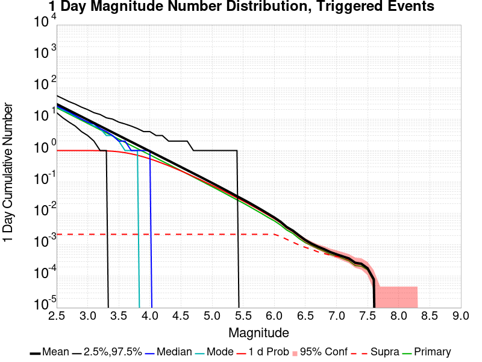
| Mag | Mean | 2.5 %ile | 97.5 %ile | Median | Mode | 1 d Probability | 1 d Supra-Seis Prob | Primary Aftershocks Mean |
|---|---|---|---|---|---|---|---|---|
| M≥2.5 | 30.101 | 16.000 | 56.000 | 26.000 | 26.000 | 1.000 (100.00%) | 2.16E-3 (0.22%) | 23.053 |
| M≥2.6 | 23.915 | 11.000 | 45.000 | 21.000 | 19.000 | 1.000 (100.00%) | 2.16E-3 (0.22%) | 18.309 |
| M≥2.7 | 18.995 | 8.000 | 36.000 | 17.000 | 16.000 | 1.000 (100.00%) | 2.16E-3 (0.22%) | 14.543 |
| M≥2.8 | 15.083 | 6.000 | 30.000 | 13.000 | 12.000 | 1.000 (100.00%) | 2.16E-3 (0.22%) | 11.548 |
| M≥2.9 | 11.977 | 4.000 | 24.000 | 10.000 | 10.000 | 1.000 (99.99%) | 2.16E-3 (0.22%) | 9.168 |
| M≥3 | 9.513 | 3.000 | 20.000 | 8.000 | 8.000 | 0.999 (99.95%) | 2.16E-3 (0.22%) | 7.285 |
| M≥3.1 | 7.552 | 2.000 | 16.000 | 7.000 | 6.000 | 0.998 (99.76%) | 2.16E-3 (0.22%) | 5.781 |
| M≥3.2 | 5.993 | 1.000 | 14.000 | 5.000 | 5.000 | 0.991 (99.14%) | 2.16E-3 (0.22%) | 4.586 |
| M≥3.3 | 4.760 | 1.000 | 11.000 | 4.000 | 3.000 | 0.977 (97.73%) | 2.16E-3 (0.22%) | 3.643 |
| M≥3.4 | 3.776 | 0.000 | 10.000 | 3.000 | 3.000 | 0.951 (95.09%) | 2.16E-3 (0.22%) | 2.891 |
| M≥3.5 | 3.001 | 0.000 | 8.000 | 2.000 | 2.000 | 0.911 (91.06%) | 2.16E-3 (0.22%) | 2.297 |
| M≥3.6 | 2.378 | 0.000 | 7.000 | 2.000 | 1.000 | 0.854 (85.40%) | 2.16E-3 (0.22%) | 1.820 |
| M≥3.7 | 1.890 | 0.000 | 6.000 | 1.000 | 1.000 | 0.786 (78.56%) | 2.16E-3 (0.22%) | 1.448 |
| M≥3.8 | 1.504 | 0.000 | 5.000 | 1.000 | 1.000 | 0.708 (70.78%) | 2.16E-3 (0.22%) | 1.151 |
| M≥3.9 | 1.194 | 0.000 | 4.000 | 1.000 | 0.000 | 0.626 (62.58%) | 2.16E-3 (0.22%) | 0.913 |
| M≥4 | 0.950 | 0.000 | 4.000 | 1.000 | 0.000 | 0.544 (54.42%) | 2.16E-3 (0.22%) | 0.726 |
| M≥4.1 | 0.753 | 0.000 | 3.000 | 0.000 | 0.000 | 0.465 (46.50%) | 2.16E-3 (0.22%) | 0.576 |
| M≥4.2 | 0.598 | 0.000 | 3.000 | 0.000 | 0.000 | 0.392 (39.22%) | 2.16E-3 (0.22%) | 0.457 |
| M≥4.3 | 0.476 | 0.000 | 2.000 | 0.000 | 0.000 | 0.330 (32.98%) | 2.16E-3 (0.22%) | 0.364 |
| M≥4.4 | 0.377 | 0.000 | 2.000 | 0.000 | 0.000 | 0.272 (27.23%) | 2.16E-3 (0.22%) | 0.288 |
| M≥4.5 | 0.299 | 0.000 | 2.000 | 0.000 | 0.000 | 0.225 (22.48%) | 2.16E-3 (0.22%) | 0.229 |
| M≥4.6 | 0.237 | 0.000 | 2.000 | 0.000 | 0.000 | 0.184 (18.40%) | 2.16E-3 (0.22%) | 0.182 |
| M≥4.7 | 0.188 | 0.000 | 1.000 | 0.000 | 0.000 | 0.149 (14.91%) | 2.16E-3 (0.22%) | 0.144 |
| M≥4.8 | 0.149 | 0.000 | 1.000 | 0.000 | 0.000 | 0.121 (12.10%) | 2.16E-3 (0.22%) | 0.114 |
| M≥4.9 | 0.118 | 0.000 | 1.000 | 0.000 | 0.000 | 0.097 (9.70%) | 2.16E-3 (0.22%) | 0.090 |
| M≥5 | 0.093 | 0.000 | 1.000 | 0.000 | 0.000 | 0.078 (7.79%) | 2.16E-3 (0.22%) | 0.071 |
| M≥5.1 | 0.073 | 0.000 | 1.000 | 0.000 | 0.000 | 0.062 (6.25%) | 2.16E-3 (0.22%) | 0.056 |
| M≥5.2 | 0.058 | 0.000 | 1.000 | 0.000 | 0.000 | 0.050 (4.98%) | 2.16E-3 (0.22%) | 0.044 |
| M≥5.3 | 0.045 | 0.000 | 1.000 | 0.000 | 0.000 | 0.039 (3.95%) | 2.16E-3 (0.22%) | 0.035 |
| M≥5.4 | 0.035 | 0.000 | 1.000 | 0.000 | 0.000 | 0.031 (3.12%) | 2.16E-3 (0.22%) | 0.027 |
| M≥5.5 | 0.028 | 0.000 | 0.000 | 0.000 | 0.000 | 0.025 (2.48%) | 2.16E-3 (0.22%) | 0.021 |
| M≥5.6 | 0.022 | 0.000 | 0.000 | 0.000 | 0.000 | 0.019 (1.94%) | 2.16E-3 (0.22%) | 0.017 |
| M≥5.7 | 0.017 | 0.000 | 0.000 | 0.000 | 0.000 | 0.015 (1.51%) | 2.16E-3 (0.22%) | 0.013 |
| M≥5.8 | 0.013 | 0.000 | 0.000 | 0.000 | 0.000 | 0.012 (1.17%) | 2.16E-3 (0.22%) | 9.83E-3 |
| M≥5.9 | 9.75E-3 | 0.000 | 0.000 | 0.000 | 0.000 | 8.94E-3 (0.89%) | 2.16E-3 (0.22%) | 7.47E-3 |
| M≥6 | 7.42E-3 | 0.000 | 0.000 | 0.000 | 0.000 | 6.87E-3 (0.69%) | 2.16E-3 (0.22%) | 5.81E-3 |
| M≥6.1 | 5.45E-3 | 0.000 | 0.000 | 0.000 | 0.000 | 5.08E-3 (0.51%) | 1.86E-3 (0.19%) | 4.28E-3 |
| M≥6.2 | 3.69E-3 | 0.000 | 0.000 | 0.000 | 0.000 | 3.47E-3 (0.35%) | 1.50E-3 (0.15%) | 2.96E-3 |
| M≥6.3 | 2.82E-3 | 0.000 | 0.000 | 0.000 | 0.000 | 2.67E-3 (0.27%) | 1.21E-3 (0.12%) | 2.30E-3 |
| M≥6.4 | 1.98E-3 | 0.000 | 0.000 | 0.000 | 0.000 | 1.86E-3 (0.19%) | 9.90E-4 (0.10%) | 1.58E-3 |
| M≥6.5 | 1.42E-3 | 0.000 | 0.000 | 0.000 | 0.000 | 1.35E-3 (0.14%) | 8.30E-4 (0.08%) | 1.17E-3 |
| M≥6.6 | 1.09E-3 | 0.000 | 0.000 | 0.000 | 0.000 | 1.05E-3 (0.10%) | 7.20E-4 (0.07%) | 9.50E-4 |
| M≥6.7 | 8.80E-4 | 0.000 | 0.000 | 0.000 | 0.000 | 8.50E-4 (0.08%) | 6.00E-4 (0.06%) | 7.60E-4 |
| M≥6.8 | 7.30E-4 | 0.000 | 0.000 | 0.000 | 0.000 | 7.10E-4 (0.07%) | 5.30E-4 (0.05%) | 6.30E-4 |
| M≥6.9 | 5.90E-4 | 0.000 | 0.000 | 0.000 | 0.000 | 5.80E-4 (0.06%) | 4.70E-4 (0.05%) | 5.00E-4 |
| M≥7 | 5.00E-4 | 0.000 | 0.000 | 0.000 | 0.000 | 5.00E-4 (0.05%) | 4.30E-4 (0.04%) | 4.40E-4 |
| M≥7.1 | 4.30E-4 | 0.000 | 0.000 | 0.000 | 0.000 | 4.30E-4 (0.04%) | 4.00E-4 (0.04%) | 3.70E-4 |
| M≥7.2 | 3.70E-4 | 0.000 | 0.000 | 0.000 | 0.000 | 3.70E-4 (0.04%) | 3.40E-4 (0.03%) | 3.10E-4 |
| M≥7.3 | 2.70E-4 | 0.000 | 0.000 | 0.000 | 0.000 | 2.70E-4 (0.03%) | 2.50E-4 (0.03%) | 2.20E-4 |
| M≥7.4 | 2.50E-4 | 0.000 | 0.000 | 0.000 | 0.000 | 2.50E-4 (0.03%) | 2.40E-4 (0.02%) | 2.10E-4 |
| M≥7.5 | 1.80E-4 | 0.000 | 0.000 | 0.000 | 0.000 | 1.80E-4 (0.02%) | 1.80E-4 (0.02%) | 1.60E-4 |
| M≥7.6 | 8.00E-5 | 0.000 | 0.000 | 0.000 | 0.000 | 8.00E-5 (0.01%) | 8.00E-5 (0.01%) | 7.00E-5 |
| M≥7.7 | 0.000 | 0.000 | 0.000 | 0.000 | 0.000 | 0.000 (0.00%) | 0.000 (0.00%) | 0.000 |
| M≥7.8 | 0.000 | 0.000 | 0.000 | 0.000 | 0.000 | 0.000 (0.00%) | 0.000 (0.00%) | 0.000 |
| M≥7.9 | 0.000 | 0.000 | 0.000 | 0.000 | 0.000 | 0.000 (0.00%) | 0.000 (0.00%) | 0.000 |
| M≥8 | 0.000 | 0.000 | 0.000 | 0.000 | 0.000 | 0.000 (0.00%) | 0.000 (0.00%) | 0.000 |
| M≥8.1 | 0.000 | 0.000 | 0.000 | 0.000 | 0.000 | 0.000 (0.00%) | 0.000 (0.00%) | 0.000 |
| M≥8.2 | 0.000 | 0.000 | 0.000 | 0.000 | 0.000 | 0.000 (0.00%) | 0.000 (0.00%) | 0.000 |
| M≥8.3 | 0.000 | 0.000 | 0.000 | 0.000 | 0.000 | 0.000 (0.00%) | 0.000 (0.00%) | 0.000 |
| M≥8.4 | 0.000 | 0.000 | 0.000 | 0.000 | 0.000 | 0.000 (0.00%) | 0.000 (0.00%) | 0.000 |
| M≥8.5 | 0.000 | 0.000 | 0.000 | 0.000 | 0.000 | 0.000 (0.00%) | 0.000 (0.00%) | 0.000 |
| M≥8.6 | 0.000 | 0.000 | 0.000 | 0.000 | 0.000 | 0.000 (0.00%) | 0.000 (0.00%) | 0.000 |
| M≥8.7 | 0.000 | 0.000 | 0.000 | 0.000 | 0.000 | 0.000 (0.00%) | 0.000 (0.00%) | 0.000 |
| M≥8.8 | 0.000 | 0.000 | 0.000 | 0.000 | 0.000 | 0.000 (0.00%) | 0.000 (0.00%) | 0.000 |
| M≥8.9 | 0.000 | 0.000 | 0.000 | 0.000 | 0.000 | 0.000 (0.00%) | 0.000 (0.00%) | 0.000 |
| M≥9 | 0.000 | 0.000 | 0.000 | 0.000 | 0.000 | 0.000 (0.00%) | 0.000 (0.00%) | 0.000 |
Legend
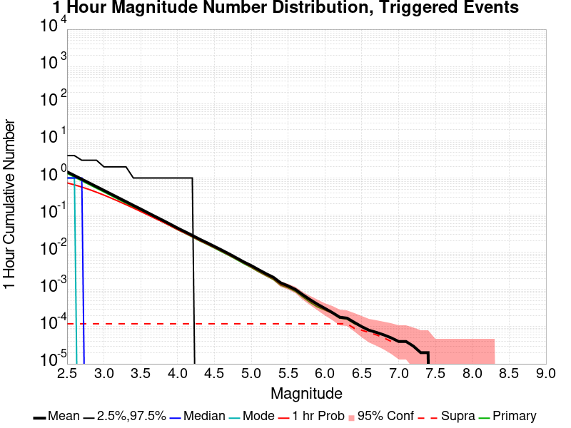
| Mag | Mean | 2.5 %ile | 97.5 %ile | Median | Mode | 1 hr Probability | 1 hr Supra-Seis Prob | Primary Aftershocks Mean |
|---|---|---|---|---|---|---|---|---|
| M≥2.5 | 1.468 | 0.000 | 4.000 | 1.000 | 1.000 | 0.738 (73.80%) | 1.20E-4 (0.01%) | 1.333 |
| M≥2.6 | 1.166 | 0.000 | 4.000 | 1.000 | 1.000 | 0.655 (65.53%) | 1.20E-4 (0.01%) | 1.059 |
| M≥2.7 | 0.925 | 0.000 | 3.000 | 1.000 | 0.000 | 0.570 (57.05%) | 1.20E-4 (0.01%) | 0.839 |
| M≥2.8 | 0.736 | 0.000 | 3.000 | 0.000 | 0.000 | 0.490 (49.01%) | 1.20E-4 (0.01%) | 0.668 |
| M≥2.9 | 0.584 | 0.000 | 3.000 | 0.000 | 0.000 | 0.414 (41.40%) | 1.20E-4 (0.01%) | 0.530 |
| M≥3 | 0.465 | 0.000 | 2.000 | 0.000 | 0.000 | 0.347 (34.68%) | 1.20E-4 (0.01%) | 0.422 |
| M≥3.1 | 0.368 | 0.000 | 2.000 | 0.000 | 0.000 | 0.286 (28.63%) | 1.20E-4 (0.01%) | 0.334 |
| M≥3.2 | 0.292 | 0.000 | 2.000 | 0.000 | 0.000 | 0.235 (23.53%) | 1.20E-4 (0.01%) | 0.265 |
| M≥3.3 | 0.231 | 0.000 | 2.000 | 0.000 | 0.000 | 0.192 (19.16%) | 1.20E-4 (0.01%) | 0.210 |
| M≥3.4 | 0.183 | 0.000 | 1.000 | 0.000 | 0.000 | 0.155 (15.54%) | 1.20E-4 (0.01%) | 0.166 |
| M≥3.5 | 0.146 | 0.000 | 1.000 | 0.000 | 0.000 | 0.125 (12.54%) | 1.20E-4 (0.01%) | 0.132 |
| M≥3.6 | 0.115 | 0.000 | 1.000 | 0.000 | 0.000 | 0.101 (10.08%) | 1.20E-4 (0.01%) | 0.104 |
| M≥3.7 | 0.091 | 0.000 | 1.000 | 0.000 | 0.000 | 0.081 (8.11%) | 1.20E-4 (0.01%) | 0.083 |
| M≥3.8 | 0.073 | 0.000 | 1.000 | 0.000 | 0.000 | 0.065 (6.54%) | 1.20E-4 (0.01%) | 0.066 |
| M≥3.9 | 0.057 | 0.000 | 1.000 | 0.000 | 0.000 | 0.052 (5.20%) | 1.20E-4 (0.01%) | 0.052 |
| M≥4 | 0.045 | 0.000 | 1.000 | 0.000 | 0.000 | 0.041 (4.11%) | 1.20E-4 (0.01%) | 0.041 |
| M≥4.1 | 0.036 | 0.000 | 1.000 | 0.000 | 0.000 | 0.033 (3.30%) | 1.20E-4 (0.01%) | 0.033 |
| M≥4.2 | 0.029 | 0.000 | 1.000 | 0.000 | 0.000 | 0.027 (2.65%) | 1.20E-4 (0.01%) | 0.026 |
| M≥4.3 | 0.023 | 0.000 | 0.000 | 0.000 | 0.000 | 0.021 (2.09%) | 1.20E-4 (0.01%) | 0.020 |
| M≥4.4 | 0.018 | 0.000 | 0.000 | 0.000 | 0.000 | 0.017 (1.69%) | 1.20E-4 (0.01%) | 0.016 |
| M≥4.5 | 0.014 | 0.000 | 0.000 | 0.000 | 0.000 | 0.014 (1.35%) | 1.20E-4 (0.01%) | 0.013 |
| M≥4.6 | 0.011 | 0.000 | 0.000 | 0.000 | 0.000 | 0.011 (1.07%) | 1.20E-4 (0.01%) | 0.010 |
| M≥4.7 | 9.06E-3 | 0.000 | 0.000 | 0.000 | 0.000 | 8.56E-3 (0.86%) | 1.20E-4 (0.01%) | 8.21E-3 |
| M≥4.8 | 7.07E-3 | 0.000 | 0.000 | 0.000 | 0.000 | 6.71E-3 (0.67%) | 1.20E-4 (0.01%) | 6.41E-3 |
| M≥4.9 | 5.50E-3 | 0.000 | 0.000 | 0.000 | 0.000 | 5.22E-3 (0.52%) | 1.20E-4 (0.01%) | 4.96E-3 |
| M≥5 | 4.40E-3 | 0.000 | 0.000 | 0.000 | 0.000 | 4.17E-3 (0.42%) | 1.20E-4 (0.01%) | 3.92E-3 |
| M≥5.1 | 3.41E-3 | 0.000 | 0.000 | 0.000 | 0.000 | 3.25E-3 (0.33%) | 1.20E-4 (0.01%) | 3.02E-3 |
| M≥5.2 | 2.67E-3 | 0.000 | 0.000 | 0.000 | 0.000 | 2.54E-3 (0.25%) | 1.20E-4 (0.01%) | 2.38E-3 |
| M≥5.3 | 2.13E-3 | 0.000 | 0.000 | 0.000 | 0.000 | 2.01E-3 (0.20%) | 1.20E-4 (0.01%) | 1.87E-3 |
| M≥5.4 | 1.51E-3 | 0.000 | 0.000 | 0.000 | 0.000 | 1.40E-3 (0.14%) | 1.20E-4 (0.01%) | 1.31E-3 |
| M≥5.5 | 1.25E-3 | 0.000 | 0.000 | 0.000 | 0.000 | 1.18E-3 (0.12%) | 1.20E-4 (0.01%) | 1.11E-3 |
| M≥5.6 | 1.00E-3 | 0.000 | 0.000 | 0.000 | 0.000 | 9.60E-4 (0.10%) | 1.20E-4 (0.01%) | 8.90E-4 |
| M≥5.7 | 7.20E-4 | 0.000 | 0.000 | 0.000 | 0.000 | 6.90E-4 (0.07%) | 1.20E-4 (0.01%) | 6.30E-4 |
| M≥5.8 | 5.30E-4 | 0.000 | 0.000 | 0.000 | 0.000 | 5.00E-4 (0.05%) | 1.20E-4 (0.01%) | 4.50E-4 |
| M≥5.9 | 4.00E-4 | 0.000 | 0.000 | 0.000 | 0.000 | 3.80E-4 (0.04%) | 1.20E-4 (0.01%) | 3.40E-4 |
| M≥6 | 3.10E-4 | 0.000 | 0.000 | 0.000 | 0.000 | 2.90E-4 (0.03%) | 1.20E-4 (0.01%) | 2.80E-4 |
| M≥6.1 | 2.40E-4 | 0.000 | 0.000 | 0.000 | 0.000 | 2.30E-4 (0.02%) | 1.20E-4 (0.01%) | 2.30E-4 |
| M≥6.2 | 1.80E-4 | 0.000 | 0.000 | 0.000 | 0.000 | 1.80E-4 (0.02%) | 1.20E-4 (0.01%) | 1.70E-4 |
| M≥6.3 | 1.70E-4 | 0.000 | 0.000 | 0.000 | 0.000 | 1.70E-4 (0.02%) | 1.20E-4 (0.01%) | 1.60E-4 |
| M≥6.4 | 1.30E-4 | 0.000 | 0.000 | 0.000 | 0.000 | 1.30E-4 (0.01%) | 9.00E-5 (0.01%) | 1.20E-4 |
| M≥6.5 | 1.00E-4 | 0.000 | 0.000 | 0.000 | 0.000 | 1.00E-4 (0.01%) | 8.00E-5 (0.01%) | 1.00E-4 |
| M≥6.6 | 8.00E-5 | 0.000 | 0.000 | 0.000 | 0.000 | 8.00E-5 (0.01%) | 7.00E-5 (0.01%) | 8.00E-5 |
| M≥6.7 | 7.00E-5 | 0.000 | 0.000 | 0.000 | 0.000 | 7.00E-5 (0.01%) | 6.00E-5 (0.01%) | 7.00E-5 |
| M≥6.8 | 6.00E-5 | 0.000 | 0.000 | 0.000 | 0.000 | 6.00E-5 (0.01%) | 5.00E-5 (0.01%) | 6.00E-5 |
| M≥6.9 | 5.00E-5 | 0.000 | 0.000 | 0.000 | 0.000 | 5.00E-5 (0.01%) | 4.00E-5 (0.00%) | 5.00E-5 |
| M≥7 | 4.00E-5 | 0.000 | 0.000 | 0.000 | 0.000 | 4.00E-5 (0.00%) | 4.00E-5 (0.00%) | 4.00E-5 |
| M≥7.1 | 4.00E-5 | 0.000 | 0.000 | 0.000 | 0.000 | 4.00E-5 (0.00%) | 4.00E-5 (0.00%) | 4.00E-5 |
| M≥7.2 | 3.00E-5 | 0.000 | 0.000 | 0.000 | 0.000 | 3.00E-5 (0.00%) | 3.00E-5 (0.00%) | 3.00E-5 |
| M≥7.3 | 2.00E-5 | 0.000 | 0.000 | 0.000 | 0.000 | 2.00E-5 (0.00%) | 2.00E-5 (0.00%) | 2.00E-5 |
| M≥7.4 | 2.00E-5 | 0.000 | 0.000 | 0.000 | 0.000 | 2.00E-5 (0.00%) | 2.00E-5 (0.00%) | 2.00E-5 |
| M≥7.5 | 0.000 | 0.000 | 0.000 | 0.000 | 0.000 | 0.000 (0.00%) | 0.000 (0.00%) | 0.000 |
| M≥7.6 | 0.000 | 0.000 | 0.000 | 0.000 | 0.000 | 0.000 (0.00%) | 0.000 (0.00%) | 0.000 |
| M≥7.7 | 0.000 | 0.000 | 0.000 | 0.000 | 0.000 | 0.000 (0.00%) | 0.000 (0.00%) | 0.000 |
| M≥7.8 | 0.000 | 0.000 | 0.000 | 0.000 | 0.000 | 0.000 (0.00%) | 0.000 (0.00%) | 0.000 |
| M≥7.9 | 0.000 | 0.000 | 0.000 | 0.000 | 0.000 | 0.000 (0.00%) | 0.000 (0.00%) | 0.000 |
| M≥8 | 0.000 | 0.000 | 0.000 | 0.000 | 0.000 | 0.000 (0.00%) | 0.000 (0.00%) | 0.000 |
| M≥8.1 | 0.000 | 0.000 | 0.000 | 0.000 | 0.000 | 0.000 (0.00%) | 0.000 (0.00%) | 0.000 |
| M≥8.2 | 0.000 | 0.000 | 0.000 | 0.000 | 0.000 | 0.000 (0.00%) | 0.000 (0.00%) | 0.000 |
| M≥8.3 | 0.000 | 0.000 | 0.000 | 0.000 | 0.000 | 0.000 (0.00%) | 0.000 (0.00%) | 0.000 |
| M≥8.4 | 0.000 | 0.000 | 0.000 | 0.000 | 0.000 | 0.000 (0.00%) | 0.000 (0.00%) | 0.000 |
| M≥8.5 | 0.000 | 0.000 | 0.000 | 0.000 | 0.000 | 0.000 (0.00%) | 0.000 (0.00%) | 0.000 |
| M≥8.6 | 0.000 | 0.000 | 0.000 | 0.000 | 0.000 | 0.000 (0.00%) | 0.000 (0.00%) | 0.000 |
| M≥8.7 | 0.000 | 0.000 | 0.000 | 0.000 | 0.000 | 0.000 (0.00%) | 0.000 (0.00%) | 0.000 |
| M≥8.8 | 0.000 | 0.000 | 0.000 | 0.000 | 0.000 | 0.000 (0.00%) | 0.000 (0.00%) | 0.000 |
| M≥8.9 | 0.000 | 0.000 | 0.000 | 0.000 | 0.000 | 0.000 (0.00%) | 0.000 (0.00%) | 0.000 |
| M≥9 | 0.000 | 0.000 | 0.000 | 0.000 | 0.000 | 0.000 (0.00%) | 0.000 (0.00%) | 0.000 |
These plots show how the probability of ruptures of various magnitudes within 100km of any scenario rupture changes over time

| Forecast Duration | UCERF3-ETAS [95% Conf] | UCERF3-ETAS Triggered Only | UCERF3-TD | UCERF3-ETAS/TD Gain | UCERF3-TI |
|---|---|---|---|---|---|
| 1 Hour | 4.25E-3 [3.86E-3 - 4.67E-3] | 4.16E-3 | 8.90E-5 | 47.74 | 8.84E-5 |
| 1 Day | 0.080 [0.078 - 0.081] | 0.078 | 2.13E-3 | 37.29 | 2.12E-3 |
| 1 Week | 0.362 [0.359 - 0.365] | 0.352 | 0.015 | 24.39 | 0.015 |
| 1 Month | 0.701 [0.698 - 0.704] | 0.681 | 0.062 | 11.29 | 0.062 |
| 1 Year | 0.978 [0.977 - 0.978] | 0.952 | 0.542 | 1.81 | 0.539 |
| 10 Years | 1.000 [1.000 - 1.000] | 0.992 | 1.000 | 1 | 1.000 |
| 30 Years | 1.000 [1.000 - 1.000] * | * | 1.000 | 1 * | 1.000 |
| 100 Years | 1.000 [1.000 - 1.000] * | * | 1.000 | 1 * | 1.000 |
* forecast duration is longer than simulation length, only ETAS ruptures from the first 10 years are included

| Forecast Duration | UCERF3-ETAS [95% Conf] | UCERF3-ETAS Triggered Only | UCERF3-TD | UCERF3-ETAS/TD Gain | UCERF3-TI |
|---|---|---|---|---|---|
| 1 Hour | 2.91E-4 [2.00E-4 - 4.21E-4] | 2.80E-4 | 1.06E-5 | 27.48 | 9.95E-6 |
| 1 Day | 7.04E-3 [6.55E-3 - 7.58E-3] | 6.79E-3 | 2.54E-4 | 27.75 | 2.39E-4 |
| 1 Week | 0.039 [0.038 - 0.040] | 0.037 | 1.77E-3 | 21.91 | 1.67E-3 |
| 1 Month | 0.103 [0.102 - 0.105] | 0.097 | 7.58E-3 | 13.63 | 7.14E-3 |
| 1 Year | 0.310 [0.308 - 0.313] | 0.243 | 0.089 | 3.5 | 0.084 |
| 10 Years | 0.750 [0.749 - 0.752] | 0.369 | 0.604 | 1.24 | 0.582 |
| 30 Years | 0.961 [0.961 - 0.961] * | * | 0.938 | 1.02 * | 0.927 |
| 100 Years | 1.000 [1.000 - 1.000] * | * | 1.000 | 1 * | 1.000 |
* forecast duration is longer than simulation length, only ETAS ruptures from the first 10 years are included
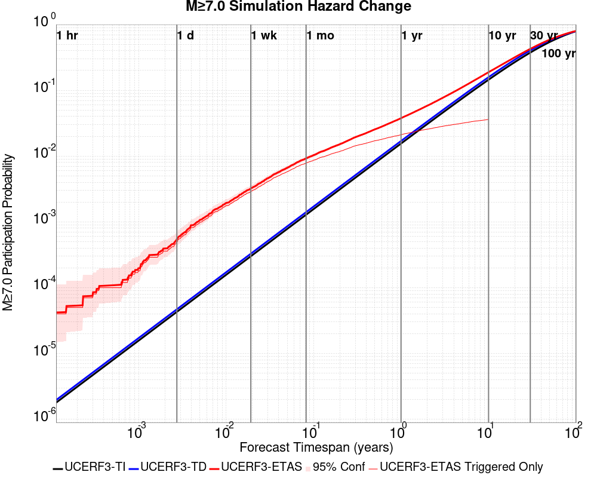
| Forecast Duration | UCERF3-ETAS [95% Conf] | UCERF3-ETAS Triggered Only | UCERF3-TD | UCERF3-ETAS/TD Gain | UCERF3-TI |
|---|---|---|---|---|---|
| 1 Hour | 4.20E-5 [1.48E-5 - 1.12E-4] | 4.00E-5 | 1.95E-6 | 21.48 | 1.79E-6 |
| 1 Day | 5.47E-4 [4.22E-4 - 7.12E-4] | 5.00E-4 | 4.69E-5 | 11.67 | 4.28E-5 |
| 1 Week | 3.22E-3 [2.90E-3 - 3.57E-3] | 2.89E-3 | 3.28E-4 | 9.81 | 3.00E-4 |
| 1 Month | 9.21E-3 [8.68E-3 - 9.78E-3] | 7.82E-3 | 1.41E-3 | 6.56 | 1.28E-3 |
| 1 Year | 0.038 [0.037 - 0.039] | 0.021 | 0.017 | 2.22 | 0.016 |
| 10 Years | 0.189 [0.188 - 0.190] | 0.036 | 0.158 | 1.19 | 0.145 |
| 30 Years | 0.427 [0.426 - 0.428] * | * | 0.405 | 1.05 * | 0.375 |
| 100 Years | 0.799 [0.799 - 0.799] * | * | 0.792 | 1.01 * | 0.791 |
* forecast duration is longer than simulation length, only ETAS ruptures from the first 10 years are included
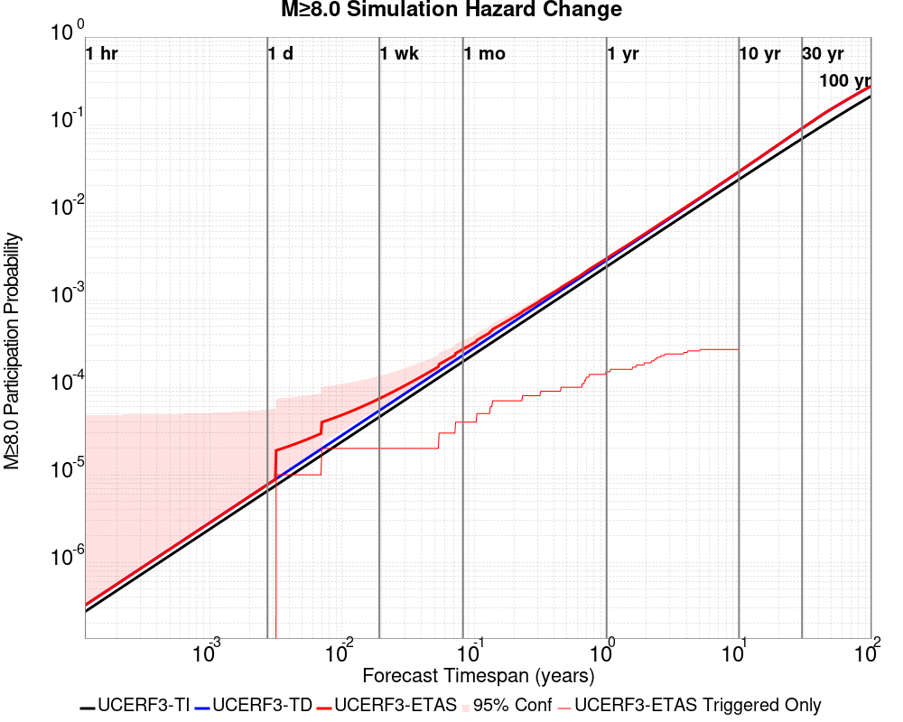
| Forecast Duration | UCERF3-ETAS [95% Conf] | UCERF3-ETAS Triggered Only | UCERF3-TD | UCERF3-ETAS/TD Gain | UCERF3-TI |
|---|---|---|---|---|---|
| 1 Hour | 3.23E-7 [3.23E-7 - 4.82E-5] | 0.000 | 3.23E-7 | 1 | 2.73E-7 |
| 1 Day | 7.74E-6 [7.74E-6 - 5.56E-5] | 0.000 | 7.74E-6 | 1 | 6.54E-6 |
| 1 Week | 7.42E-5 [5.76E-5 - 1.35E-4] | 2.00E-5 | 5.42E-5 | 1.37 | 4.58E-5 |
| 1 Month | 2.72E-4 [2.45E-4 - 3.42E-4] | 4.00E-5 | 2.32E-4 | 1.17 | 1.96E-4 |
| 1 Year | 2.97E-3 [2.91E-3 - 3.08E-3] | 1.50E-4 | 2.82E-3 | 1.05 | 2.39E-3 |
| 10 Years | 0.029 [0.029 - 0.029] | 2.70E-4 | 0.029 | 1.01 | 0.024 |
| 30 Years | 0.091 [0.091 - 0.091] * | * | 0.091 | 1 * | 0.069 |
| 100 Years | 0.277 [0.277 - 0.277] * | * | 0.276 | 1 * | 0.213 |
* forecast duration is longer than simulation length, only ETAS ruptures from the first 10 years are included
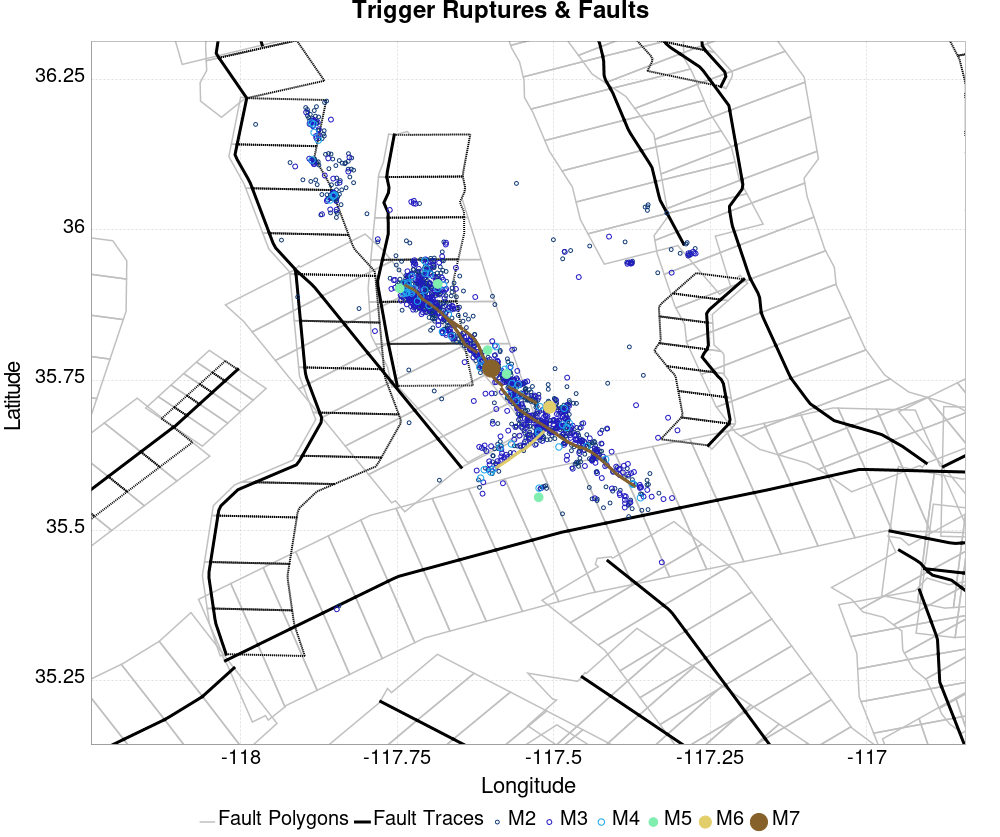

| Section Name | Strike, Dip, Rake | # Hypos In Poly | Max Mag w/ Hypo In Poly | # Surfs In Poly | Max Mag w/ Surf In Poly | Min Dist To Any (km) | Min Poly Dist To Any (km) | Min Dist To Largest (km) | Min Poly Dist To Largest (km) | Min Hypo Dist To Largest (km) | Min Hypo Poly Dist To Largest (km) |
|---|---|---|---|---|---|---|---|---|---|---|---|
| Airport Lake | 359, 50, -90 | 823 | 7.1 | 823 | 7.1 | 0.036 | 0.000 | 0.036 | 0.000 | 5.612 | 0.000 |
| Little Lake | 327, 90, 180 | 275 | 5.5 | 276 | 7.1 | 1.937 | 0.000 | 11.284 | 0.000 | 13.471 | 1.469 |
| Garlock (Central) | 71, 90, 0 | 107 | 5.01 | 108 | 7.1 | 0.225 | 0.000 | 5.600 | 0.000 | 22.802 | 10.829 |
| So Sierra Nevada | 2, 50, -90 | 81 | 4.52 | 81 | 4.52 | 1.134 | 0.000 | 4.248 | 4.233 | 16.191 | 15.188 |
| Ash Hill | 162, 90, 180 | 19 | 3.57 | 19 | 3.57 | 0.088 | 0.000 | 34.883 | 23.252 | 35.808 | 25.242 |
| Panamint Valley | 334, 90, -150 | 15 | 3.57 | 15 | 3.57 | 6.249 | 0.000 | 29.583 | 17.627 | 34.539 | 22.615 |
| Tank Canyon | 189, 50, -90 | 1 | 3.0 | 1 | 3.0 | 1.252 | 0.000 | 9.015 | 9.011 | 17.243 | 17.072 |
| Blackwater | 323, 90, 180 | 1 | 3.54 | 1 | 3.54 | 5.396 | 0.000 | 14.394 | 8.726 | 29.661 | 27.718 |
| Sierra Nevada (No Extension) | 344, 50, -90 | 0 | 0 | 5.696 | 3.696 | 39.627 | 39.626 | 58.680 | 58.391 | ||
| Owens Valley | 346, 90, 180 | 0 | 0 | 13.143 | 12.581 | 49.013 | 48.524 | 68.299 | 66.819 | ||
| Scodie Lineament | 221, 68, 0 | 0 | 0 | 16.722 | 15.781 | 28.750 | 27.702 | 36.559 | 32.668 | ||
| Lenwood-Lockhart-Old Woman Springs | 301, 90, 180 | 0 | 0 | 18.221 | 16.336 | 53.532 | 41.707 | 59.689 | 48.512 | ||
| Garlock (West) | 55, 90, 0 | 0 | 0 | 18.439 | 18.373 | 63.115 | 60.529 | 66.426 | 62.627 |
These are map plots of individual catalogs from the simulations, selected as the closest catalog to each of the given percentiles in terms of total number of events.
| Duration | p0.0 %-ile | p25.0 %-ile | p50.0 %-ile | p75.0 %-ile | p90.0 %-ile | p95.0 %-ile | p97.5 %-ile | p98.0 %-ile | p99.0 %-ile | p99.5 %-ile | p99.9 %-ile | p100.0 %-ile |
|---|---|---|---|---|---|---|---|---|---|---|---|---|
| 1 Week |  |  |  |  |  |  |  |  |  | |||
| 1 Month |  |  |  |  |  |  |  |  |  |  | ||
| 1 Year |  |  |  |  |  |  |  |  |  |  | ||
| 10 Year |  |  |  |  |  |  |  |  |  |
These plots compare simulated sequences with data from ComCat. All plots only consider events with hypocenters inside the ComCat region defined in the JSON input file.
Last updated at 2020/03/13 13:33:24 UTC, 240.4 days after the simulation start time.
Total matching ComCat events found: 555
| Incremental MND | Cumulative MND |
|---|---|
| 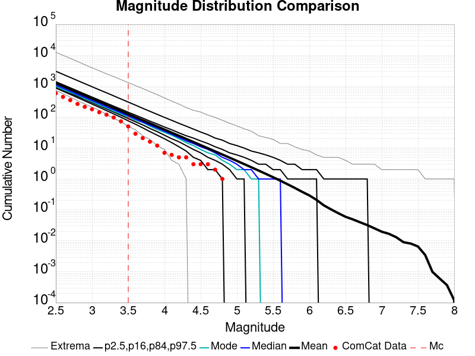 |
The following plots compare simulation results with ComCat data above a magnitude threshold. Plots labeled as M≥Mc(t) use the time-dependent magnitude of completeness (Mc) defined in Helmstetter et al. (2006), which is plotted below. In the case of multiple M≥5 ruptures, either as input to the simulation or in the comparison data, the maximum calculated time-dependent Mc is used. This time-dependent Mc function is plotted below.

| M≥Mc(t) | M≥3.5 | M≥4 | M≥5 | M≥6 |
|---|---|---|---|---|
| 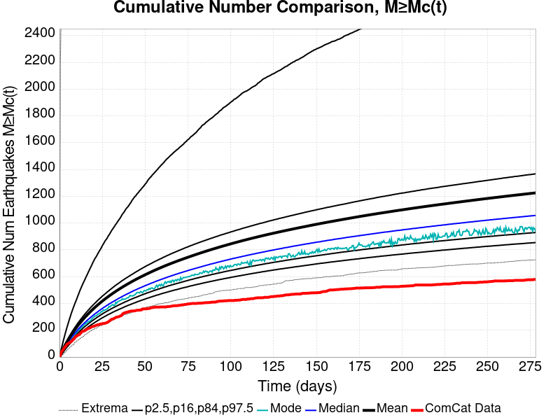 |  |  |  |

Note: maps labeled 'Forecast' are for a duration that extends into the future, only forecasted values are plotted (ComCat data omitted)
| 1 Day | 1 Week | 1 Month | Current (240.4 Day) | Forecast: 1 Year | |
|---|---|---|---|---|---|
| M≥Mc(t) |  |  |  |  | 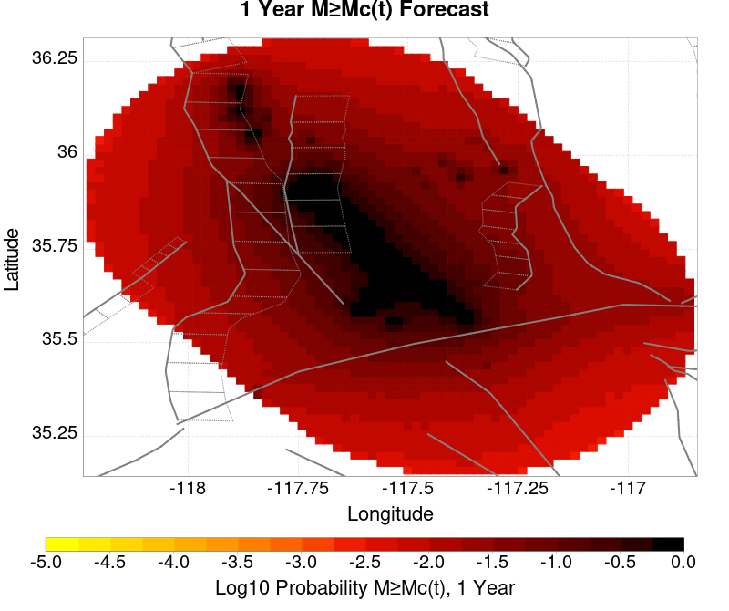 |
| Prob: 100.00%, Actual: 29 | Prob: 100.00%, Actual: 116 | Prob: 100.00%, Actual: 277 | Prob: 100.00%, Actual: 555 | Prob: 100.00% | |
| M≥3.5 |  |  |  |  | |
| Prob: 90.74%, Actual: 2 | Prob: 100.00%, Actual: 11 | Prob: 100.00%, Actual: 22 | Prob: 100.00%, Actual: 47 | Prob: 100.00% | |
| M≥4 |  |  |  |  | |
| Prob: 53.85%, Actual: 0 | Prob: 98.29%, Actual: 2 | Prob: 100.00%, Actual: 3 | Prob: 100.00%, Actual: 5 | Prob: 100.00% | |
| M≥5 | 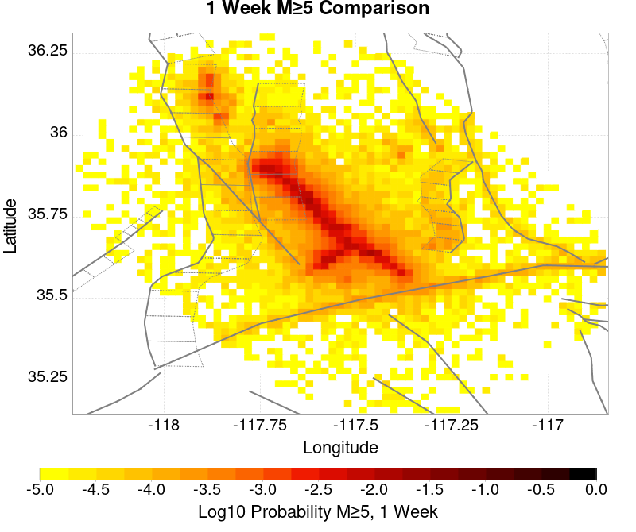 | ||||
| Prob: 7.65%, Actual: 0 | Prob: 34.88%, Actual: 0 | Prob: 67.64%, Actual: 0 | Prob: 92.98%, Actual: 0 | Prob: 94.98% | |
| M≥6 |  |  | 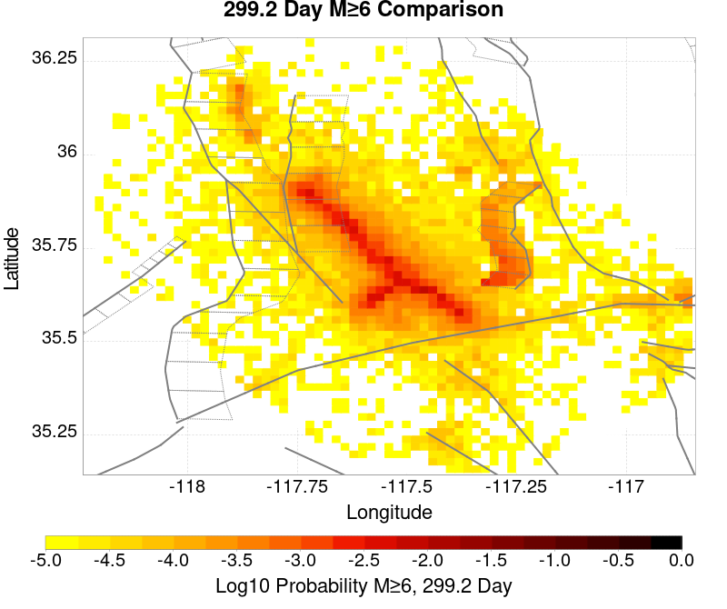 | ||
| Prob: 0.66%, Actual: 0 | Prob: 3.64%, Actual: 0 | Prob: 9.43%, Actual: 0 | Prob: 21.36%, Actual: 0 | Prob: 23.75% | |
| M≥7 |  |  |  |  | |
| Prob: 0.05%, Actual: 0 | Prob: 0.28%, Actual: 0 | Prob: 0.76%, Actual: 0 | Prob: 1.79%, Actual: 0 | Prob: 2.04% | |
| M≥8 |  | 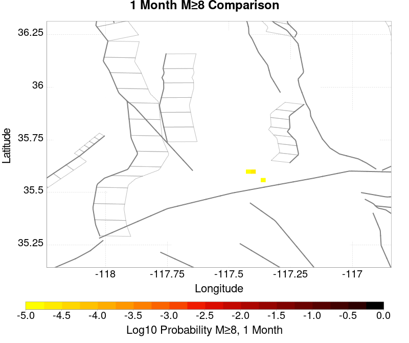 | |||
| Prob: 0.00%, Actual: 0 | Prob: 0.00%, Actual: 0 | Prob: 0.00%, Actual: 0 | Prob: 0.01%, Actual: 0 | Prob: 0.01% |
Note: maps labeled 'Forecast' are for a duration that extends into the future, only forecasted values are plotted (ComCat data omitted)
| 1 Day | 1 Week | 1 Month | Current (240.4 Day) | Forecast: 1 Year | |
|---|---|---|---|---|---|
| M≥Mc(t) |  |  |  | ||
| Mean: 29.160, Actual: 29 | Mean: 167.852, Actual: 116 | Mean: 465.269, Actual: 277 | Mean: 1168.910, Actual: 555 | Mean: 1332.957 | |
| M≥3.5 |  | 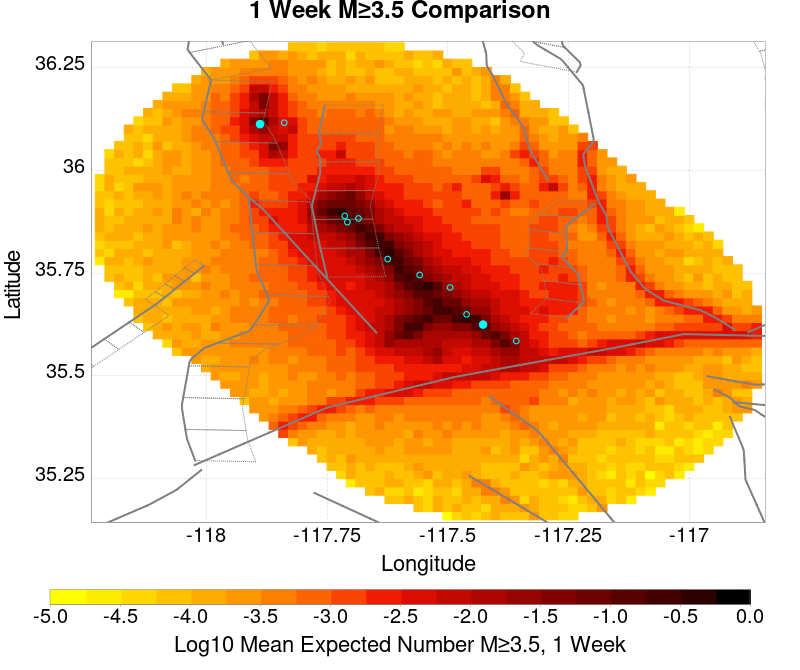 |  |  | |
| Mean: 2.906, Actual: 2 | Mean: 16.779, Actual: 11 | Mean: 46.478, Actual: 22 | Mean: 116.799, Actual: 47 | Mean: 133.188 | |
| M≥4 |  |  |  | 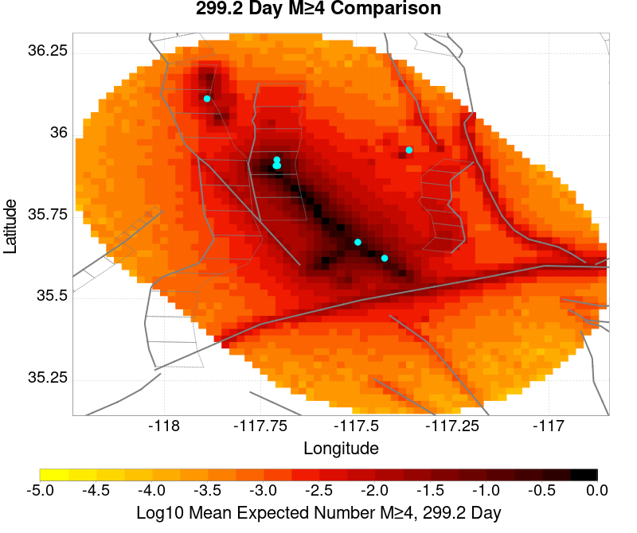 | |
| Mean: 0.919, Actual: 0 | Mean: 5.300, Actual: 2 | Mean: 14.680, Actual: 3 | Mean: 36.879, Actual: 5 | Mean: 42.053 | |
| M≥5 | 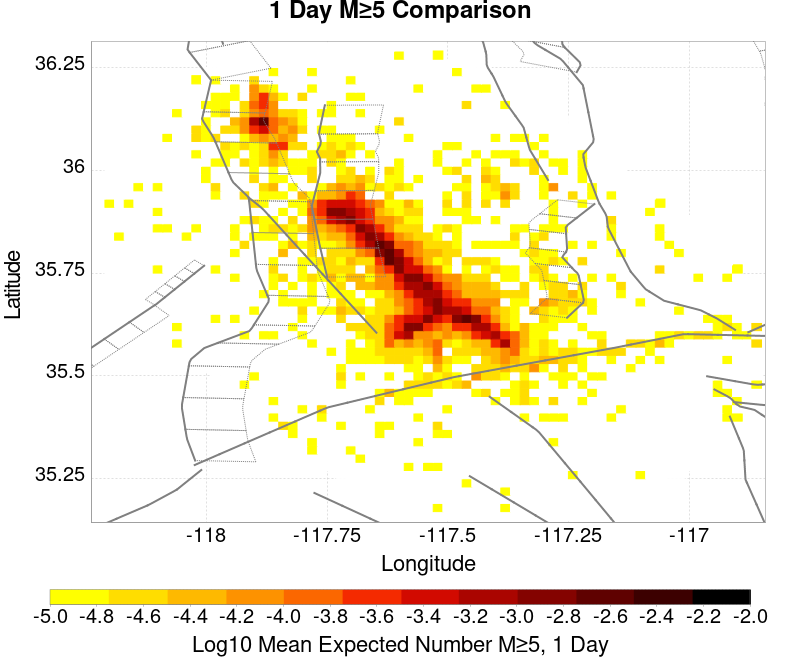 |  | 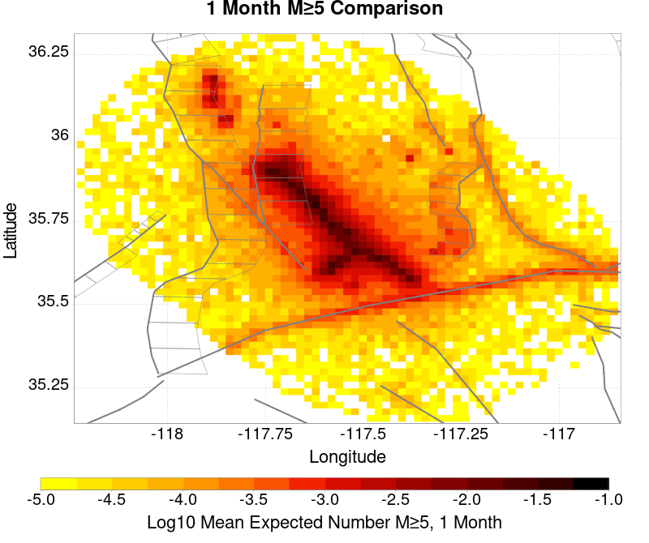 |  | |
| Mean: 0.090, Actual: 0 | Mean: 0.515, Actual: 0 | Mean: 1.424, Actual: 0 | Mean: 3.588, Actual: 0 | Mean: 4.092 | |
| M≥6 |  | 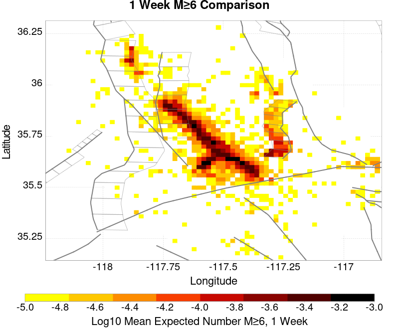 |  |  |  |
| Mean: 6.99E-3, Actual: 0 | Mean: 0.040, Actual: 0 | Mean: 0.110, Actual: 0 | Mean: 0.274, Actual: 0 | Mean: 0.312 | |
| M≥7 | 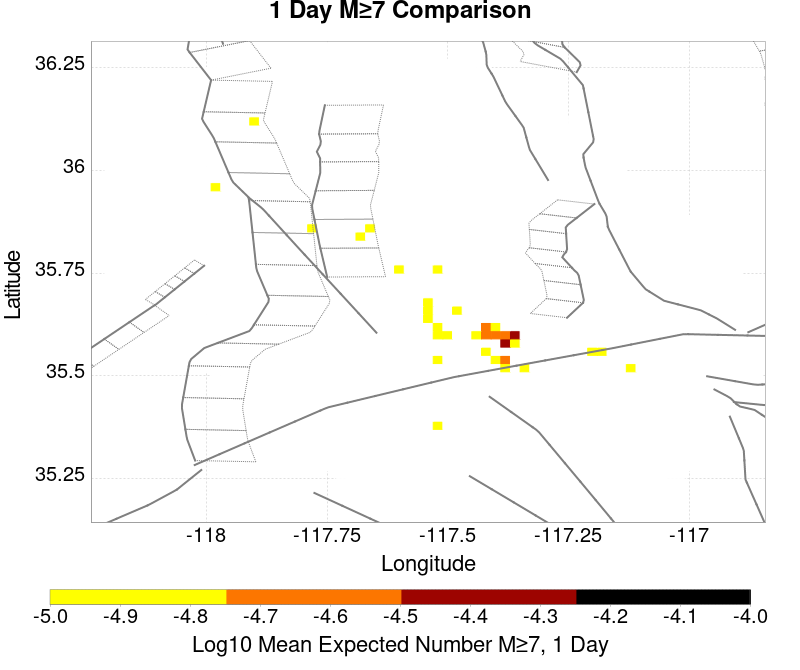 |  |  |  |  |
| Mean: 4.70E-4, Actual: 0 | Mean: 2.83E-3, Actual: 0 | Mean: 7.72E-3, Actual: 0 | Mean: 0.018, Actual: 0 | Mean: 0.021 | |
| M≥8 |  |  | 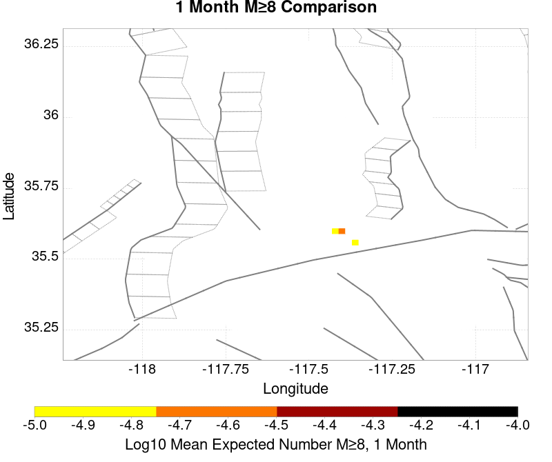 | ||
| Mean: 0.000, Actual: 0 | Mean: 2.00E-5, Actual: 0 | Mean: 4.00E-5, Actual: 0 | Mean: 1.00E-4, Actual: 0 | Mean: 1.30E-4 |
| M≥Mc(t) | M≥3.5 | M≥4 | M≥5 | M≥6 | M≥7 | M≥8 |
|---|---|---|---|---|---|---|
| 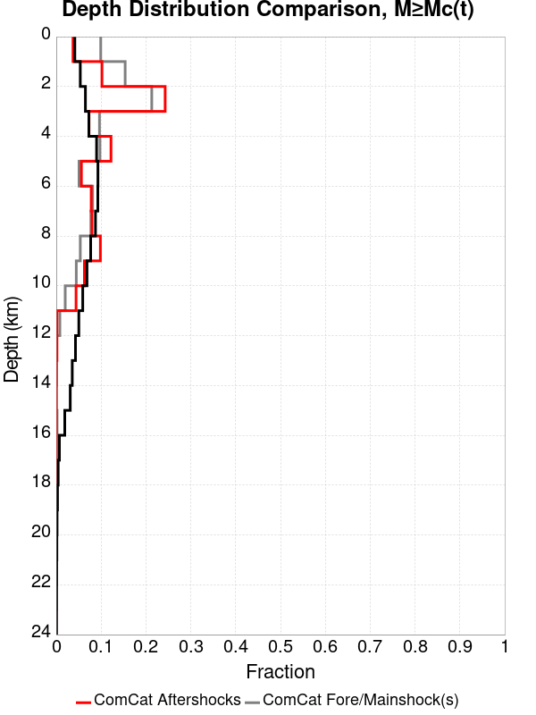 | 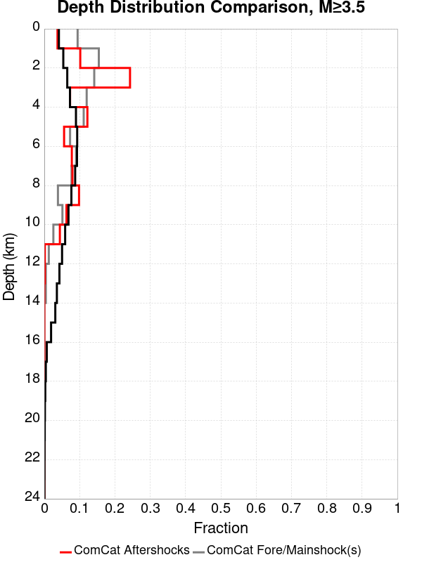 |  |  |  |  |  |
| Min Mag | 1 yr Triggered Ruptures (no spontaneous) | 10 yr Triggered Ruptures (no spontaneous) | 10 yr Triggered Ruptures (primary aftershocks only) |
|---|---|---|---|
| All Supra. Seis. |  | 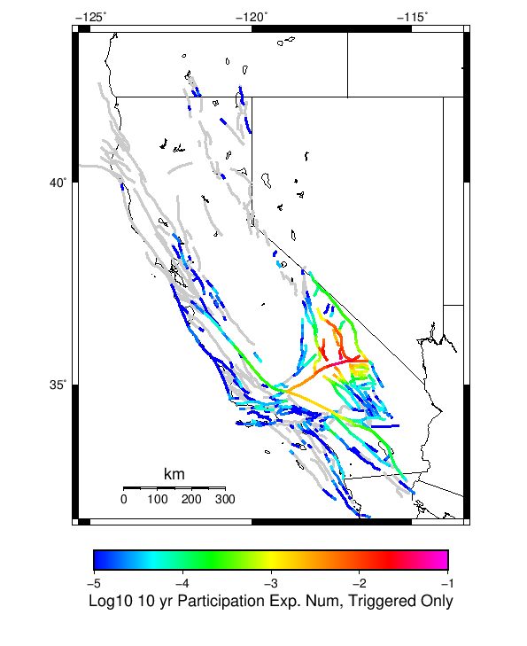 | |
| M≥6.5 |  | ||
| M≥7 |  |  |  |
| M≥7.5 |  |  |  |
| M≥8 |  |  |  |
First 10 of 186 with matching ruptures shown
| Parent Name | Triggered 10 Year Mean Count | Triggered 1 Day Prob | Triggered 1 Week Prob | Triggered 1 Month Prob | Triggered 1 Year Prob | Triggered 10 Year Prob | Triggered 10 Year Primary Mean Count |
|---|---|---|---|---|---|---|---|
| Garlock (Central) | 0.066 | 9.7E-4 | 0.00533 | 0.01457 | 0.03834 | 0.06372 | 0.03542 |
| Tank Canyon | 0.055 | 4.4E-4 | 0.00309 | 0.00869 | 0.02616 | 0.04716 | 0.01482 |
| Little Lake | 0.02977 | 4.1E-4 | 0.00222 | 0.00632 | 0.0177 | 0.02919 | 0.01694 |
| Airport Lake | 0.02336 | 2.1E-4 | 0.00185 | 0.00526 | 0.01461 | 0.02328 | 0.0154 |
| Owl Lake | 0.02191 | 1.7E-4 | 0.0012 | 0.00353 | 0.01061 | 0.01937 | 0.00549 |
| Panamint Valley | 0.01589 | 1.7E-4 | 0.0011 | 0.00331 | 0.00886 | 0.01553 | 0.00601 |
| Garlock (East) | 0.01459 | 1.2E-4 | 7.4E-4 | 0.00246 | 0.00704 | 0.013 | 0.00344 |
| Ash Hill | 0.00834 | 9.0E-5 | 5.9E-4 | 0.00149 | 0.00427 | 0.00789 | 0.00214 |
| Hunter Mountain-Saline Valley | 0.00771 | 1.3E-4 | 5.5E-4 | 0.00171 | 0.00448 | 0.00757 | 0.00374 |
| Blackwater | 0.00615 | 3.0E-5 | 2.8E-4 | 9.8E-4 | 0.00301 | 0.00587 | 0.00152 |
First 10 of 159 with matching ruptures shown
| Parent Name | Triggered 10 Year Mean Count | Triggered 1 Day Prob | Triggered 1 Week Prob | Triggered 1 Month Prob | Triggered 1 Year Prob | Triggered 10 Year Prob | Triggered 10 Year Primary Mean Count |
|---|---|---|---|---|---|---|---|
| Garlock (Central) | 0.02908 | 4.1E-4 | 0.00233 | 0.00628 | 0.0168 | 0.02861 | 0.01505 |
| Little Lake | 0.01727 | 2.4E-4 | 0.00134 | 0.0038 | 0.01046 | 0.01713 | 0.01021 |
| Airport Lake | 0.01718 | 1.3E-4 | 0.00133 | 0.00396 | 0.01079 | 0.01715 | 0.01131 |
| Panamint Valley | 0.01455 | 1.7E-4 | 0.00101 | 0.00306 | 0.00816 | 0.01423 | 0.00589 |
| Owl Lake | 0.01204 | 1.2E-4 | 7.6E-4 | 0.00236 | 0.0068 | 0.01199 | 0.0049 |
| Garlock (East) | 0.00976 | 1.0E-4 | 6.2E-4 | 0.00186 | 0.00519 | 0.00916 | 0.00331 |
| Hunter Mountain-Saline Valley | 0.00755 | 1.3E-4 | 5.5E-4 | 0.00168 | 0.00439 | 0.00744 | 0.00371 |
| Tank Canyon | 0.00548 | 3.0E-5 | 3.3E-4 | 0.00102 | 0.00307 | 0.00545 | 0.00161 |
| Garlock (West) | 0.00495 | 3.0E-5 | 4.2E-4 | 9.8E-4 | 0.00293 | 0.00493 | 0.00242 |
| So Sierra Nevada | 0.00267 | 3.0E-5 | 1.9E-4 | 3.9E-4 | 0.00134 | 0.00263 | 4.3E-4 |
First 10 of 114 with matching ruptures shown
| Parent Name | Triggered 10 Year Mean Count | Triggered 1 Day Prob | Triggered 1 Week Prob | Triggered 1 Month Prob | Triggered 1 Year Prob | Triggered 10 Year Prob | Triggered 10 Year Primary Mean Count |
|---|---|---|---|---|---|---|---|
| Garlock (Central) | 0.02601 | 3.7E-4 | 0.00204 | 0.00557 | 0.01512 | 0.02573 | 0.0134 |
| Panamint Valley | 0.01013 | 1.6E-4 | 7.6E-4 | 0.00231 | 0.00606 | 0.01009 | 0.00498 |
| Owl Lake | 0.00889 | 1.1E-4 | 6.9E-4 | 0.00187 | 0.00519 | 0.00889 | 0.0047 |
| Hunter Mountain-Saline Valley | 0.00724 | 1.3E-4 | 5.5E-4 | 0.00164 | 0.00432 | 0.00722 | 0.00365 |
| Garlock (East) | 0.00704 | 1.0E-4 | 5.3E-4 | 0.00147 | 0.004 | 0.007 | 0.00319 |
| Garlock (West) | 0.0049 | 3.0E-5 | 4.2E-4 | 9.8E-4 | 0.00291 | 0.0049 | 0.00242 |
| Little Lake | 0.00356 | 3.0E-5 | 3.0E-4 | 8.1E-4 | 0.00216 | 0.00356 | 0.00231 |
| Airport Lake | 0.00328 | 3.0E-5 | 2.7E-4 | 7.8E-4 | 0.00201 | 0.00328 | 0.00218 |
| San Andreas (Mojave N) | 0.0022 | 0.0 | 1.7E-4 | 4.2E-4 | 0.00116 | 0.00215 | 9.9E-4 |
| San Andreas (Mojave S) | 0.00187 | 0.0 | 1.5E-4 | 3.2E-4 | 9.4E-4 | 0.00183 | 7.7E-4 |
First 10 of 73 with matching ruptures shown
| Parent Name | Triggered 10 Year Mean Count | Triggered 1 Day Prob | Triggered 1 Week Prob | Triggered 1 Month Prob | Triggered 1 Year Prob | Triggered 10 Year Prob | Triggered 10 Year Primary Mean Count |
|---|---|---|---|---|---|---|---|
| Garlock (Central) | 0.01092 | 1.6E-4 | 8.5E-4 | 0.00233 | 0.00657 | 0.01089 | 0.00571 |
| Panamint Valley | 0.007 | 1.3E-4 | 5.2E-4 | 0.00159 | 0.00421 | 0.007 | 0.00359 |
| Hunter Mountain-Saline Valley | 0.00698 | 1.3E-4 | 5.2E-4 | 0.00159 | 0.00421 | 0.00698 | 0.00359 |
| Garlock (West) | 0.0045 | 3.0E-5 | 3.6E-4 | 9.0E-4 | 0.00266 | 0.0045 | 0.00221 |
| Garlock (East) | 0.00281 | 3.0E-5 | 1.8E-4 | 5.8E-4 | 0.0017 | 0.00281 | 0.00144 |
| San Andreas (Mojave N) | 0.00218 | 0.0 | 1.7E-4 | 4.2E-4 | 0.00116 | 0.00214 | 9.9E-4 |
| San Andreas (Mojave S) | 0.0018 | 0.0 | 1.5E-4 | 3.2E-4 | 9.3E-4 | 0.00176 | 7.7E-4 |
| San Andreas (San Bernardino N) | 0.0011 | 0.0 | 9.0E-5 | 1.8E-4 | 5.4E-4 | 0.00108 | 4.0E-4 |
| Owl Lake | 7.5E-4 | 0.0 | 5.0E-5 | 1.4E-4 | 4.6E-4 | 7.5E-4 | 3.2E-4 |
| San Andreas (San Bernardino S) | 6.0E-4 | 0.0 | 5.0E-5 | 9.0E-5 | 2.6E-4 | 6.0E-4 | 2.3E-4 |
First 10 of 31 with matching ruptures shown
| Parent Name | Triggered 10 Year Mean Count | Triggered 1 Day Prob | Triggered 1 Week Prob | Triggered 1 Month Prob | Triggered 1 Year Prob | Triggered 10 Year Prob | Triggered 10 Year Primary Mean Count |
|---|---|---|---|---|---|---|---|
| San Andreas (Mojave N) | 2.7E-4 | 0.0 | 2.0E-5 | 4.0E-5 | 1.5E-4 | 2.7E-4 | 9.0E-5 |
| San Andreas (Mojave S) | 2.7E-4 | 0.0 | 2.0E-5 | 4.0E-5 | 1.5E-4 | 2.7E-4 | 9.0E-5 |
| San Andreas (San Bernardino N) | 2.7E-4 | 0.0 | 2.0E-5 | 4.0E-5 | 1.5E-4 | 2.7E-4 | 9.0E-5 |
| Garlock (Central) | 2.1E-4 | 0.0 | 2.0E-5 | 4.0E-5 | 1.4E-4 | 2.1E-4 | 9.0E-5 |
| Garlock (West) | 2.1E-4 | 0.0 | 2.0E-5 | 4.0E-5 | 1.4E-4 | 2.1E-4 | 9.0E-5 |
| Garlock (East) | 1.7E-4 | 0.0 | 1.0E-5 | 3.0E-5 | 1.1E-4 | 1.7E-4 | 7.0E-5 |
| San Andreas (San Bernardino S) | 1.7E-4 | 0.0 | 1.0E-5 | 2.0E-5 | 9.0E-5 | 1.7E-4 | 7.0E-5 |
| San Andreas (San Gorgonio Pass-Garnet HIll) | 1.6E-4 | 0.0 | 1.0E-5 | 2.0E-5 | 9.0E-5 | 1.6E-4 | 7.0E-5 |
| San Andreas (Coachella) rev | 1.2E-4 | 0.0 | 0.0 | 0.0 | 5.0E-5 | 1.2E-4 | 3.0E-5 |
| San Jacinto (San Bernardino) | 7.0E-5 | 0.0 | 1.0E-5 | 2.0E-5 | 5.0E-5 | 7.0E-5 | 1.0E-5 |
The first 5 sections (sorted by trigger rate) are plotted below. All fault MPDs are available here
| 1 Week | 1 Month | 1 Year | 10 Year |
|---|---|---|---|
| 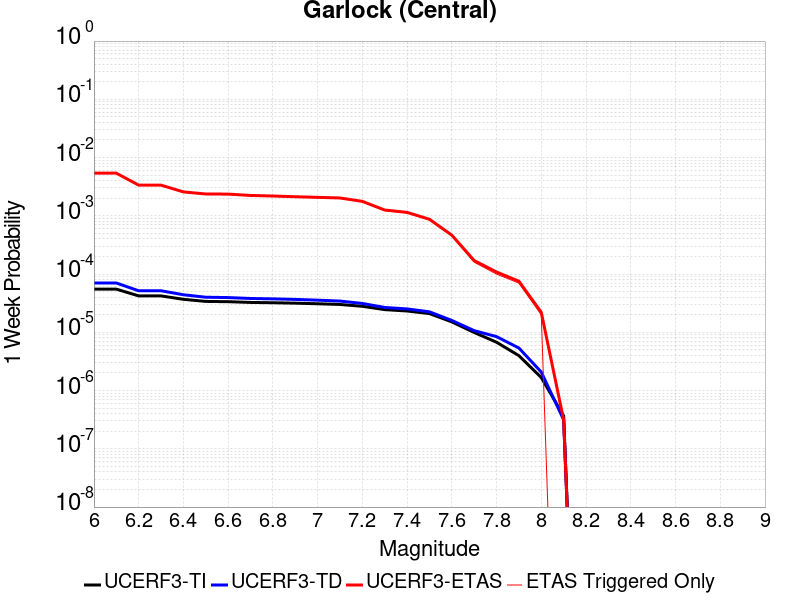 |  |  |  |
 |  |  | |
 |  |  |  |
 |  |  |  |
 |  |  |  |
| Min Mag | Triggered Ruptures (no spontaneous) | Triggered Ruptures (primary aftershocks only) |
|---|---|---|
| M≥2.5 |  |  |
| M≥5 | 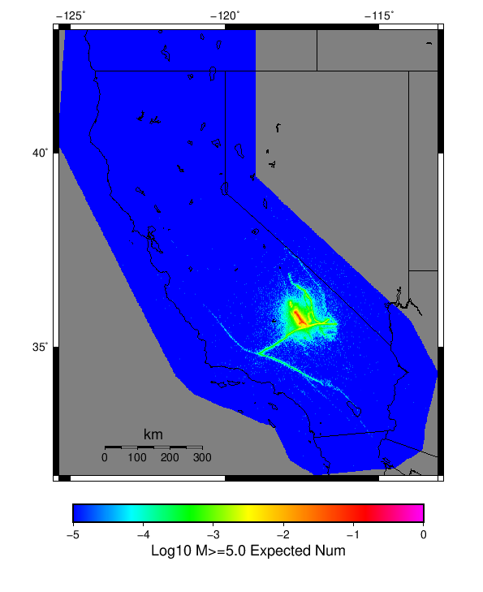 |  |
| M≥6 |  | |
| M≥7 |  |
{
"numSimulations": 100000,
"duration": 10.0,
"startTimeMillis": 1563333594040,
"includeSpontaneous": false,
"randomSeed": 1563333792346,
"binaryOutput": true,
"binaryOutputFilters": [
{
"prefix": "results_complete",
"descendantsOnly": false
},
{
"prefix": "results_m5_preserve_chain",
"minMag": 5.0,
"preserveChainBelowMag": true,
"descendantsOnly": false
}
],
"forceRecalc": false,
"simulationName": "ComCat M7.1 (ci38457511), 11 Days After, ShakeMap Surfaces",
"numRetries": 3,
"outputDir": "/home/scec-02/kmilner/ucerf3/etas_sim/2019_07_16-ComCatM7p1_ci38457511_11DaysAfter_ShakeMapSurfaces-noSpont-full_td-scale1.14",
"triggerRuptures": [
"omitted due to length, see original input file"
],
"cacheDir": "/home/scec-02/kmilner/ucerf3/ucerf3-etas-launcher/inputs/cache_fm3p1_ba",
"fssFile": "/home/scec-02/kmilner/ucerf3/ucerf3-etas-launcher/inputs/2013_05_10-ucerf3p3-production-10runs_COMPOUND_SOL_FM3_1_SpatSeisU3_MEAN_BRANCH_AVG_SOL.zip",
"probModel": "FULL_TD",
"applySubSeisForSupraNucl": true,
"totRateScaleFactor": 1.14,
"gridSeisCorr": true,
"timeIndependentERF": false,
"griddedOnly": false,
"imposeGR": false,
"includeIndirectTriggering": true,
"gridSeisDiscr": 0.1,
"catalogCompletenessModel": "RELAXED",
"comcatMetadata": {
"region": {
"border": [
{
"latitude": 35.15123745324938,
"longitude": -117.46198765392752
},
{
"latitude": 35.170513097218205,
"longitude": -117.55046477274733
},
{
"latitude": 35.201997575622634,
"longitude": -117.63356287896195
},
{
"latitude": 35.24474776584818,
"longitude": -117.70878534540662
},
{
"latitude": 35.29030244291857,
"longitude": -117.7650027179687
},
{
"latitude": 35.28979894832488,
"longitude": -117.7657059692625
},
{
"latitude": 35.599352334844,
"longitude": -118.10406638799292
},
{
"latitude": 35.59991798729306,
"longitude": -118.1032787187642
},
{
"latitude": 35.59991798729306,
"longitude": -118.10327871876426
},
{
"latitude": 35.6081394160588,
"longitude": -118.11346457171017
},
{
"latitude": 35.66926981044508,
"longitude": -118.1666275188854
},
{
"latitude": 35.73695892585081,
"longitude": -118.20599267135113
},
{
"latitude": 35.80916411728616,
"longitude": -118.23033589945786
},
{
"latitude": 35.8837008101987,
"longitude": -118.23887921717626
},
{
"latitude": 35.95830771861983,
"longitude": -118.2313189434723
},
{
"latitude": 36.030715089420035,
"longitude": -118.20784020820832
},
{
"latitude": 36.09871396695588,
"longitude": -118.16911673663371
},
{
"latitude": 36.16022434972565,
"longitude": -118.11629525880562
},
{
"latitude": 36.21336005220017,
"longitude": -118.05096440373305
},
{
"latitude": 36.25648810437343,
"longitude": -117.97510853634732
},
{
"latitude": 36.28828062939993,
"longitude": -117.8910476483114
},
{
"latitude": 36.307757341513756,
"longitude": -117.8013650783672
},
{
"latitude": 36.31431710102649,
"longitude": -117.70882546279998
},
{
"latitude": 36.307757341513756,
"longitude": -117.61628584723277
},
{
"latitude": 36.28828062939993,
"longitude": -117.52660327728856
},
{
"latitude": 36.25648810437343,
"longitude": -117.44254238925264
},
{
"latitude": 36.21336005220017,
"longitude": -117.36668652186691
},
{
"latitude": 36.16849978031224,
"longitude": -117.31153038795429
},
{
"latitude": 36.1690738860583,
"longitude": -117.3107309475365
},
{
"latitude": 35.857302712860964,
"longitude": -116.9730504737608
},
{
"latitude": 35.85679179423907,
"longitude": -116.9737640944955
},
{
"latitude": 35.849566414597014,
"longitude": -116.96491461360324
},
{
"latitude": 35.78805819220281,
"longitude": -116.9122967694479
},
{
"latitude": 35.72006106557635,
"longitude": -116.87372034968973
},
{
"latitude": 35.64765482528862,
"longitude": -116.85032807444419
},
{
"latitude": 35.57304829206068,
"longitude": -116.8427916482061
},
{
"latitude": 35.49851117585832,
"longitude": -116.8512961557198
},
{
"latitude": 35.42630481575459,
"longitude": -116.87553976530553
},
{
"latitude": 35.35861392859174,
"longitude": -116.91474809853695
},
{
"latitude": 35.29748137319737,
"longitude": -116.96770221389164
},
{
"latitude": 35.24474776584818,
"longitude": -117.03277884359336
},
{
"latitude": 35.201997575622634,
"longitude": -117.10800131003803
},
{
"latitude": 35.170513097218205,
"longitude": -117.19109941625265
},
{
"latitude": 35.15123745324938,
"longitude": -117.27957653507247
},
{
"latitude": 35.14474752487352,
"longitude": -117.3707820945
}
]
},
"eventID": "ci38457511",
"minDepth": -10.0,
"maxDepth": 24.0,
"minMag": 2.5,
"startTime": 1562259775360,
"endTime": 1563333593040,
"magComplete": 3.5
}
}